![[image1]](images/plans1.jpg){kind=link}
![[image2]](images/plans2.jpg){kind=link}
![[image3]](images/plans3.jpg){kind=link}
![[image4]](images/plans4.jpg){kind=link}
![[image5]](images/general1.jpg){kind=link}
![[image6]](images/general2.jpg){kind=link}
![[image7]](images/perspective.jpg){kind=link}


Star Wars Quake: The Call of the Force Design Document
(last updated: October 29, 1999) Revision 0.92
[note: some images are not present in the version, since I’ll be updating it often over the next few days from the Word document]
Table of Contents:
0.0 Overview 1.0 Enemies 1.6 Anti-Vehicular Troops1.7 Skaren Droidworks SKE-27 "Preserver"
1.8 Charleston Mechanics CM-5 "Precision"
1.9 Azrael Prison Staff (the "ShatterSquad")
2.0 Characters 3.0 Levels3.16 Imperial Prison Planet Azrael
4.0 Weapons4.1 BlasTech DL-44 Heavy Blaster Pistol
4.2 BlasTech E-11 Blaster Rifle
4.3 BlasTech T-21 Light Repeating Blaster Rifle
4.5 Kelvarek Consolidated Arms Wrist Rocket
4.6 Merr-Sonn PLX-2M Missile Tube
4.7 Tenloss DXR-6 Disruptor Rifle
5.0 Items 6.0 Lightsaber Combat 7.0 The Force 8.0 Other Programming Concerns 9.0 Cut-Scenes9.3 Dominance Approach/Academy Attack
9.5 Escape from the Dominance, Ionus IV Landing
9.8 Training/Initiation to Jedi Knighthood
9.9 Death of Jedi Council
10. Dialog Trees
10.1 txt
11. Multiplayer
11.1 Goals of Multiplayer Implementation
12.0 Development Team 13.0 Production Schedule 14.0 Task List
0.0 Overview:
In the simplest terms, Star Wars Quake: The Call of the Force is the blending of the Star Wars universe and the Quake 2 game engine. Star Wars Quake (or SWQ) is what is known as a "total conversion" (or TC) of Quake 2. What this means is that all of the art and game code elements from the existing game have been replaced, but the core code remains the same. As such, SWQ's basic function is identical to that of Quake 2's -- a first-person action shooter. However, a TC is granted some freedom in having access to the game code, and SWQ takes full advantage of this by branching off from the simple "run and gun" gameplay to include a rich storyline, role-playing elements, and of course, our representation of the classic Star Wars universe.
SWQ is set in the Star Wars universe, and our goal is to create a convincing representation of that universe, using the movies and officially recognized art and text as references. Wherever possible, we will duplicate the universe exactly, and any unique elements to the TC will be created with heavy emphasis on making them appear to fit into the universe.
The TC is set approximately 20 years before Star Wars: A New Hope. The Empire is beginning to truly cement its hold, and the galaxy is a fearful place as people begin to realize just what sort of a man Emperor Palpantine is. Meanwhile, the Emperor and Lord Vader have come to the decision that the remaining Jedi Knights are too much of a danger to their position to be allowed to live, and plans for the institution of the Great Jedi Purge are set into motion...
SWQ tells the story of a former Imperial officer who was sent away to a Jedi Academy to protect him from the beginnings of the Great Jedi Purge in the Imperial armed forces. From there, he is quickly swept up into the events of a galaxy that is slowly beginning to develop hate and fear of anyone able to use the Force. With no memories to go back on, and Jedi who are afraid for their lives and a small resistance group as his only allies, the player soon discovers he must find his own path through the chaos that is being unleashed...
[RK's note: the following is the "official" backstory that is posted on the web site and will be released with the TC]
************************BACKSTORY BEGIN*****************************
The Imperial Star Destroyer Dominance hung suspended in space, the light of the nearby sun glinting dully off it's metal hull, just as the glowpanel's light glinted off the polished boots of the general walking the officer's deck of the mighty ship. Nodding to the two crew members who passed by in the hall, he abruptly turned and tapped the control for the door to the officer's lounge, pausing for a moment to let the hidden hydraulics do their work before entering and heading straight for the food dispenser. The room was empty at this hour, with the notable exception of Captain Coburn, who was immersed in a data pad. Selecting something hot from the dispenser, the general slid into a seat across from Coburn, saying "Shall we see what the Empire wants of us today?" before picking up another stray pad and keying in his identity to access the Imperial Network.
Captain Coburn raised his head and blinked, the general doubted he had even heard him come in. "Not much, thankfully. We're to stay in orbit and await some official who's to scan the crew." He waved a hand idly. "Something about checking for the ability to use the Force, so that 'individuals possessing the said ability may be given their proper due in the Imperial Armed Services'. Everything should be in your orders. All you should have to do is let the guy scan you, and you're done."
The general's grip on his data pad became white-knuckled, the display creaked slightly in protest. "When will he be arriving?" he asked urgently.
"He's already here, I just came up from welcoming him on board and getting scanned myself. Why, is something wrong?"
"No, everything is fine, sir."
Coburn nodded. "Good. Since we're on the subject of these scans, you'll probably want to return to your quarters for a time, as the scanning crew has orders to start with command-level personnel and their immediate families, should any be on board."
The general rose, his grip on the data pad becoming tighter. "You'll excuse me then, sir, I shall see that my son is available."
Barely waiting for the captain's nod, the general walked at a forced pace across the room and out into the corridor, but as soon as the door to the lounge had closed behind him, he flung the data pad to the floor and broke into a flat run down the deck. Bursting into the door of his quarters a few moments later, he went quickly to his desk in the back of the room and pulled out two objects: a small data disk, and an old lightsaber, one that had been built by his father, and one he had been trained how to use, even without the ability to touch the Force. Pushing them both into a pocket in his uniform, he ran out the door and down the hall to his son's quarters, using a command override to open the door. His son looked up sharply from his own desk, but didn't have a chance to speak before another officer appeared at the door, carrying a strange device from a strap at his shoulder.
"Ah." he said, glancing at the two in the room. "I didn't expect to find you here, general. This will save us both some time. Now if you'll just hold still, this won't take long." With that, he moved the two crystal-sheet paddles in his hands to either side of the general and touched a control. Immediately a holographic image of the general appeared, and the official nodded to himself before stepping over to the general's son and repeating the procedure. This time however, the holographic image had a bright white glow around it, and the official took a step back. "Such...power. I've never seen-". Cutting himself off with an uneasy glance at the general, the official pulled out his blaster pistol and leveled it at the general's son. "My apologies sir, but I need to escort your son to my shuttle for...treatment. If you'll kindly step out of the way, we can have this done with and-"
He never got to finish that sentence, for at that moment, the general drew his own blaster and fired two quick shots into the other man's chest. His son stared at the fallen official in shock, but the general didn't waste any time. He immediately flipped his blaster over to stun and fired again, this time at his son. Picking up the younger man's limp form, the general holstered his blaster and took off down the corridor once more. Arriving at the medbay, he laid his son down onto one of the examination tables, just as the ship's doctor emerged from his office.
"General, what happened?!"
"I don't have time to explain. Now listen to me carefully. You mentioned once that you had developed a long-term mental suppression technique that would erase all memories of places, people, or events, but still leave the subject functional, correct?"
"Yes, it effectively removes a person's life, but allows them to perform any task as they always would, but why-"
"I want you to perform the procedure on him."
"On your son?! No, I won't-"
The general drew his blaster once more and leveled it at the doctor. "Now."
Several minutes later saw the general again carrying the body of his son, this time in the Dominance’s hangar bay. Running on board a waiting shuttle, the general set his son down in the pilot's seat and secured the restraints before turning the navigational computer. Pulling out the data disk, he placed it into the computer and keyed for a course to the coordinates contained within. After a few moments of analysis, the computer responded with "Autopilot enabled, destination confirmed." Turning back to his son once more, the general pulled out the lightsaber and looked at it for a long moment before clipping it onto his son's belt. Hitting the door seal as he left, the general walked back behind the railing as the shuttle's automated systems guided it out of the Dominance and into hyperspace. As the vehicle bearing his son stretched into the realm of hyperspace, the general at last let a sigh escape his lips before turning towards the hangar bay door and jerking a comlink from his belt.
"Get me Captain Coburn, and have a medical team meet me at my quarters immediately! There's been a dreadful accident..."
*************************BACKSTORY END****************************
[RK's note: That should be a Victory-class Star Destroyer, but did they use that distinction back then? Also, I think the name Dominance is used on another Imperial ship, I'll have to look that up again...]
SWQ's units are divided into three classes: player, enemy, non-player character (or NPC), or bystander. Each is detailed below.
SWQ's most prevalent enemy type, which are reproduced exactly from the movies in terms of appearance. They will often appear in significant groups, so keeping the poly count relatively low is a must.
Stormtroopers are not weak or stupid. Despite their actions in the movies, these are supposed to be the Empire's crack troops, and as such, their intelligence level should be fairly high, taking advantage of route-finding technology to locate the player in the level, and if at all possible, they should be able to form and work in small "squads". Since they carry 100-charge blaster rifles, we don't need to worry about any kind of reloading.
- Idle
-Walk
-Run
-Fire
-Pain1
-Pain2
-ChokePain
-LightningPain
-Die1
-Die2
-Die3
-Die4
-ChokeDie
Aside from the blaster fire, this should all sound as if it is coming through the trooper's helmet filtration system, and thus have that artificial quality present in the movies.
-Sight1
-Sight2
-Sight3
-Pain1
-Pain2
-ChokePain
-LightningPain
-Die1
-Die2
-ChokeDie
These appear in a variety of locations throughout the TC, most noteably on the Star Destroyer, but at least one is present in almost all Imperial levels. We want to duplicate their appearance from the movies exactly, but for the sake of simplicty only one uniform type and one face is required. There's some apparent dispute over the color of the uniform (brown, grey, or green), we'll just stick with the brown.
[RK's note: an additional skin with a grand admiral's white uniform would be a nice touch, I think.]
(see also: 2.3.1 "Imperial Officers" for details on the bystander version of the officer)
Officers don't wear any armor, and are therefore extremely easy to take down, one good blaster shot will do it. However, they do carry blaster pistols, and are very good shots.
- Idle
-Walk
-Run
-Fire
-Pain1
-Pain2
-ChokePain
-LightningPain
-Die1
-Die2
-ChokeDie
This can be any voice, nothing specific is really required.
-Sight1
-Sight2
-Fire
-Pain1
-ChokePain
-LightningPain
-Die1
-ChokeDie
Used primarily when the player is on another vehicle, the Biker Scouts are pretty fast, and can deal some heavy damage with their bike's blasters. Again, these should look just as they do in the movies
[RK's note: the biker and bike should be two separate models attached together]
Biker Scouts are just as well armored as Stormtroopers, so it takes a few shots to bring them down. Once they spot the player, they'll fire and give chase, zooming past in firing passes, then turning about and doing the same (when they turn, they should bank, and appear to be leaning over as they do it) If they're hit, they'll wobble in their flight a bit before regaining smooth control. Upon death, biker will fall of the bike dead, and the bike will travel on in a straight line until it collides with something, at which point it will explode.
- Idle
-TurnLeft
-TurnRight
-Fire
-Pain1
-Pain2
-CrashDie1
-CrashDie2
These should have the same filtered quality as the Stormtroopers
-Idle >> a speederbike "hum"
-Move >> a variation of the speeder "hum" used while in motion
-Fire >> sound of the bike's blasters firing
-Sight1
-Sight2
-Pain1
-ChokePain
-LightningPain
-Die1
-Crash
These are the guys with the conical helmets that are seen on the Star Destroyer and the Death Star in the movies. Regular troops who aren't cut out to be Stormtroopers, these make up the bulk of the Imperial army.
No armor is worn, so regular troops will go down with one good blaster shot, but like the Imperial Officers, they know how to aim the blaster pistols they carry. Their behavior is straightforward: upon sight, they'll attack the player.
[RK's note: this model is used pretty extensively, so let's make sure the animations/sounds are top quality!]
- Idle
-Walk
-Run
-Fire
-Pain1
-Pain2
-ChokePain
-LightningPain
-Die1
-Die2
-Die3
-ChokeDie
This can be any voice, nothing specific is really required, so long as it is different from any other.
-Sight1
-Sight2
-Fire
-Pain1
-Pain2
-ChokePain
-LightningPain
-Die1
-Die2
-Die3
-ChokeDie
Regular troops who show a skill in marksmanship are placed into a special unit which specializes in sniping. These guys look just like regular troop (1.4), except the helmet has been removed so as not to interfere with their aiming, and they carry a Xerrol Nightstinger instead of a blaster pistol.
Sniper troops like to stay far away from the player, they won't try to run up to him.
[RK's note: They'll usually be placed somewhere up high out of the player's reach]
When they spot the player, they'll bring up their weapon and shoot, and they guys typically don't miss. Since their sporting Nightstinger, they do quite a bit of damage, too, so the player needs to locate and dispose of any he encounters quickly. Once a sniper does spot the player, they will move about to keep the player in range, but won't ever come closer then they have to.
These are exactly like those used with the regular troops, except for the modifications necessary because of the sniper rifle.
- Idle
-Walk
-Run
-Fire
-Pain1
-Pain2
-ChokePain
-LightningPain
-Die1
-Die2
-Die3
-ChokeDie
Exactly like the regular troops, except for the firing sound.
-Sight1
-Sight2
-Fire
-Pain1
-Pain2
-ChokePain
-LightningPain
-Die1
-Die2
-Die3
-ChokeDie
Equipped with missile tubes, the primary function of these soldiers is to take out small vehicles or ships. These, too, look like regular troops, except that their helmets are replaced with some wrap-around hearing protection and they carry a missile tube across their shoulders.
Due to the splash damage from the missiles, anti-vehicular troops like to stay far away from the player, they won't try to run up to him. They try to find a secure area to start with, too, because they don't move very fast with that heavy missile tube slung across their shoulders. Other then that, they'll simply target the player and fire missiles as quickly as they can. However, the missile tube can only hold three missiles at a time, so every third time this enemy fires, he'll have to reach up to the side panel and place three more missiles inside (for the TC, he'll just reach up to the panel three times).
These are exactly like those used with the regular troops, except for the modifications necessary because of the missile tube, and the reloading frames.
- Idle
-Walk
-Run
-Fire
-Reload
-Pain1
-Pain2
-ChokePain
-LightningPain
-Die1
-Die2
-Die3
-ChokeDie
Exactly like the regular troops, except for the firing and reloading sounds.
-Sight1
-Sight2
-Fire
-Reload
-Pain1
-Pain2
-ChokePain
-LightningPain
-Die1
-Die2
-Die3
-ChokeDie
1.7 Skaren Droidworks SKE-27 "Preserver":
Slow, hulking, and only able to fire from the front, the SKE-27 is hardly used anymore today, but still kept in service by those favoring the sheer amount of of punishment required to bring it down. Sporting two internally mounted T-21 blaster rifles and a thermal detonator launcher besides, the SKE-27 is nothing if not well armed.
The SKE-27 is very slow, it should be easy for the player to run around to its unprotected back and unload enough ammo to bring it down. However, taking the thing out will make a noticable dent in the player's ammo stores, this droid takes a lot of punishment to bring down. Though it's slow, if the player finds himself in front of it, he's in trouble, as it will continue to blast away with its T-21's, and if the player is far enough away, it will toss out the occasional thermal detonator to further trouble the player.
Using Force Choke on a droid doesn't cause any damage.
The SKE-27 is slow and hulking, keep that in mind when animating. Since it's a droid, no idle animation is needed. There's no run either.
-Walk
-FireGuns
-FireTD >> used when firing a thermal detonator
-Pain1
-Pain2
-Die1
-Die2
This is supposed to be an older droid so a less-developed, very artificial voice is required.
-Sight1 >> "Halt, intruder!"
-FireGuns
-FireTD
-Pain1 >> electric arc/damaged circuit
-Pain2 >> metallic "thunk"
-Die
1.8 Charleston Mechanics CM-5 "Precision":
The CM-5 is the latest security droid offering from Charleston Mechanics, utilizing the updated beam tube technology developed by the former Timms employees. Roughly humanoid in shape and size (think IG-88), the CM-5's single arm (located on the droid's left side) houses a continuos-fire beam tube, replenished by recharging energy cells in the torso. Along the CM-5's right shoulder is a rack of mini-concussion missiles, used to keep the target at a reasonable range while the droid slices it to bits with the beam tube. The rest of the unit is devoted to the powerful servos that give the droid it's speed.
The CM-5 is fast, almost as fast as the player. It should be a real challenge to get around it. It uses its beam tube to good advantage, causing the player some serious grief, and if the player is far enough away, it will use mini-concussion missiles to do further damage. Though it can do a significant amount of damage, the CM-5 is relatively easy to take down, the only problem is hitting it because of its speed.
Using Force Choke on a droid doesn't cause any damage.
This droid is light and fast, so keep that in mind when animating. The firing of the missiles doesn't require a specific animation.
-Walk
-Fire
-Pain1
-Pain2
-Die1
-Die2
This voice should be artificial as well, but sound "newer".
-Sight1 >> "Surrender immediately!"
-Sight1 >> target acquisition sound (a loud tone)
-FireBeam
-FireMissile
-Pain1 >> electric arc/damaged circuit
-Pain2 >> light metallic "thunk"
-Die
1.9 Azrael Prison Staff ("The ShatterSquad"):
After the deaths of a great number of the troops stationed on Azrael due to the escape of some of the extremely dangerous prisoners held there, the soldiers keeping watch over the prisoners discarded their standard issue blaster pistols and E-11's, and took up T-21's or DXR-6 disruptor rifles. Tossing away the almost unprotecting Imperial armor, this group arranged the purchase of some real armor vests. With these and their newly obtained weapons, the soldiers returned to duty under the nick of "The ShatterSquad", determined to break those unruly prisoners into submission and keep the peace. To date there have been no further outbreaks of violence on the part of the prisoners, though there have been several mysterious deaths and disappearances among the inmates.
These guys are wearing a standard-issue Imperial jumpsuit with an armor vest strapped over the top, and carry either a T-21 or a disruptor rifle (two versions of the enemy will be needed) slung across a shoulder. They're a pretty rough bunch, all boasting powerful frames.
Pretty straightforward here, they attack on site, and with the firepower they've got, there's no need for fancy tactics. The armor their wearing is noticably tougher then what the regular Imperials wear, so they're a little tougher to bring down, too.
In addition to the normal credit and weapon/ammo drop upon death, these guys also drop keycards. The T-21 carrying variant is holding a card to open up the cells, and the disruptor-toting variant has the keycard for the doors that give access to the other cellblocks.
Remember these are rough, tough guys, their animations should show significant strength. They're pretty arrogant, too, a little swagger in their walk wouldn't be out of place.
- Idle
-Walk
-Run
-FireBlaster
-FireDisruptor
-Pain1
-Pain2
-ChokePain
-LightningPain
-Die1
-Die2
-ChokeDie
This should be a pretty gruff voice. Sounds for things like ChokePain and LightningPain can be re-used from the officers or regular troops.
-Sight1
-Sight2
-FireBlaster
-FireDisruptor
-Pain1
-Pain2
-ChokePain
-LightningPain
-Die1
-ChokeDie
Occasionally, when an enemy of the Empire is proving to be particularly deadly, a patrolling TIE fighter will be called in to assist in eliminating the threat. Though TIEs were not designed for atmospheric flight, the ship is quite capable of the task, and targeting a humanoid on the ground does not require much speed or quick turns. With the two turbolasers mounted under the cockpit concentrated on one area, the TIE can be very lethal indeed.
This should be a direct representation of the ships shown in the movies. It should pack a pretty mean punch, but be pretty easy to take down with a rocket due to its slower movement in the atmosphere.
This is a flying enemy, obviously. It should stay at a minimum of about three player heights above the ground, and fire its turbolasers whenever it gets the chance. Using TIE Fighter as a reference, it should have a pretty quick rate of fire, so this is a very deadly enemy to a player out in the open. Like the Bike Scouts (1.3), the TIE should make passes on the player, then bank around and make another pass. The TIE has two methods of death: 1) If the Force Choke is used to kill the pilot, the ship drops towards the grounds and explodes upon collision. 2) If any other method of death occurs, the ship explodes and spawns several "TIE gibs" which fall to the ground.
No fire animation is really needed here, the turbolaser bolts can just spawn from the ship. The death animation is controlled by the code.
- Idle >> shifts slightly as if floating
-Pain1 >> wobbles slightly
-Pain2 >> makes a very noticeable jerk before flying straight again
As always, these should mirror the sounds heard in the movies as accurately as possible.
-Idle >> the "TIE sound" (roar produced by the ion engines)
-Fire
-Pain >> heavy metal "thunk"
Used in defense of critical installations, or for assaults against such installations on the enemy side, the AT-ST is quick-moving for an armored vehicle, capable of extremely damaging firepower, and able to withstand incredible firepower before going down.
This should be a direct representation of the ships shown in the movies. Its damage potential should be about equal to that of the TIE, but should be very hard to bring down.
The walkers will patrol the area they're place in until a threat is spotted, at which point they'll engage like a normal ground enemy, firing with their turbolasers until the target is destroyed.
[RK's note: if we can do it, I would really love to see the ability to slice the legs of of these things and watch them fall to the ground]
- Idle >> shifts turbolaser cannons about, perhaps adjusts legs a bit
-Walk
-Fire
-Pain1 >> recoils backwards
-Pain2 >> recoils backwards, but to a greater degree, even taking a step back.
-Die1 >> falls over to the right
-Die2 >> falls straight down on its "face"
As always, these should mirror the sounds heard in the movies as accurately as possible.
-Idle >> this is questionable, maybe an engine sound?
-Walk >> the essential "walker walk" sound
-Fire
-Pain >> heavy metal "thunk" [RK's note: can probably re-use the TIE damage sound]
-Die >> metal screech
Like the pirates who sailed the high seas in days of old, smugglers are bound together by a common spirit of rebellion against any form of government. They are "their own Princes" and "make their own laws". Living mostly on the power and speed of their ships, smugglers still often find themselves in personal combat situations, and a blaster is never far from their side...
Just think Han Solo here. These guys are a little rough around the edges, but other then that they're just standard humanoids.
[RK's note: these aren't Imperials so there's no discrimination against aliens. Smugglers, like their pirate brethren before them, will take anyone into their fold (even going so far as to liberate the wrongly imprisoned). As such, we should have a couple variations of the smuggler model, using different aliens as a base]
The behavior of smugglers is much like that of the Imperial officers (1.2). They'll attack on site and carry a blaster pistol, but their blaster pack a much heavier punch then what the officers carry.
- Idle
-Walk
-Run
-Fire
-Pain1
-Pain2
-ChokePain
-LightningPain
-Die1
-Die2
-ChokeDie
This can be any voice, nothing specific is really required.
[RK's note: if we use alien variants, we'll have to do variants of the sounds as well]
-Sight1
-Sight2
-Fire
-Pain1
-ChokePain
-LightningPain
-Die1
-ChokeDie
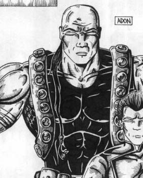
The Al’moreth were a very war-like clan upon the world of the Jocar people. Some very great Force users were among the population, and every few hundred years one of their descendants is born strong enough for his talent to be noticed even by the untrained populace. Then is the youth taken to a hidden camp and trained in the ways of battle with this "magic" - trained in the Dark Side. Adon was such a person, and after his training, led his clan to great victories; he was merciless and bent on conquest over the other clans. Much changed, however, when a ship crash-landed on the planet near Adon's camp, and Adon thought to question the pilot. The results of the interrogation informed the Jocar of just how insignificant they were in the galaxy. Not believing it at first, but when some of the greater minds in the clan reluctantly told him that it was true, Adon and most of his clansmen were taken by a desperate need to not only go out into this larger world, but conquer it for the Jocar. So, letting the pilot's automated distress call continue to transmit, the Al'moreth awaited the other ship the pilot said would come, and when it did, took it's crew captive and forced them to instruct the Al'moreth in the use of the ship and it's technology. Once satisfied, Adon and his clansmen set out on galactic conquest in the Outer Rim. After many hard lessons and fierce battles, the Jocar now hold sway over their entire sector, and for the moment seem content to battle among the clans once more. Adon, hearing of others with the ability to use his "magic", was pleasantly surprised to discover another Dark Jedi in exile on one of the other primitive worlds the Jocar captured. Wondering what he could do with an army of Force-users, Adon welcomed the instruction of his trainer, Ashen, and later followed him when he joined with the other Dark Jedi in the Great Purge, though he himself plans to attempt to convince others to join his "cause". He also finds a somewhat kindred spirit in the Empire, and is willing to serve it as well as use it for his own ends.
Adon is a big man who has always relied more on brute force then finnesse in combat, and to a large degree he still does; he has a long ways to go to gain mastery over the lightsaber. However imperfect his form may be, however, he can put so much force behind his blows that if an opponent does not meet them properly, he may find himself being cut by his own lightsaber.
Adon is pretty inexperienced when it comes to the lightsaber, though he does like its sheer lethality. Like all of the Dark Jedi, he can block blaster bolts/projecticles easily, the player must use either the Force, their lightsaber, or carefully timed explosions to take him out. Grudgingly acknowledging his as-yet limited skill with the lightsaber, he makes a generous use of Lightning and Choke whenever not directly engaged with the player. When the player does get within striking distance of Adon's lightsaber, he'll face primarily chops and left/right swings, with the occasional thrust. Adon knows how to block, but he's a bit slow sometimes. His large size also prevents him from moving very quickly; he's slow compared to the player.
The model should be split up into attachments, so that the player can cut off his arms or head when landing that killing blow.
Keep in mind that Adon is a giant of a man, he should seem threatening just in the way he walks.
- Idle >> idle breathe
-Walk
-Run
-SaberChop
-SaberSwingLeft
-SaberSwingRight
-SaberThrust >> Adon's attacks should look vicious, rough. Style/finesse isn't really "him".
-SaberBlockUpLeft
-SaberBlockUpRight
-SaberBlockLeft
-SaberBlockRight
-SaberBlockLowLeft
-SaberBlockLowRight
-UseLightning >> shows an out-stretched hand
-UseChoke >> shows an extended clenched hand
-Pain1
-Pain2
-Pain3
-ChokePain >> grabs at throat with free hand
-LightningPain
-Die >> falls backwards with arms thrown out, saber falls to ground beside him (off)
-DieNoHead >> falls to knees and forward onto chest.
-ChokeDie
Voice should be pretty deep&rough here.
-[see dialog tree]
-SaberIdle >> Idle saber hum
-SaberSwing1
-SaberSwing2
-SaberSwing3
-SaberSwing4
-SaberBlock1
-SaberBlock2
-Pain1
-Pain2
-Pain3
-ChokePain
-LightningPain
-Die
-ChokeDie
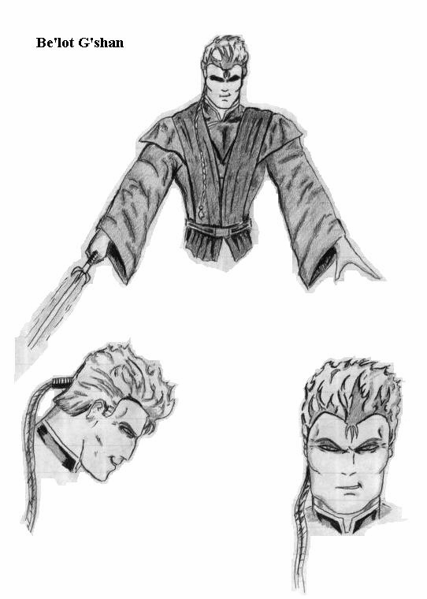
A Dark Jedi who also answered Vader's call, he is amazed by Draken's experiments and is with the other Jedi whenever possible, he thirst for more power as unquenchable as the parched land on his home planet. After discovering his affinity with the Force, Be'lot sought to train under the Jedi Master Siar, and progressed rapidly through his lessons -- perhaps too rapidly. Delving into the Dark Side when Master Siar was away, he quickly turned from the path of the Light and when Siar found out what his pupil had been up to, Be'lot fled, not yet feeling able to fight his former Master, and not willing to remain and listen to Siar's talk of "redemption". His skills in the Force growing from his own training and experimentation, he began to make plans for expansion of his own power when he caught wind of Vader's plans for the Purge and he decided to depart for Coruscant. Now that he has been exposed to the other Dark Jedi's influences, he thirsts for the death of the other Jedi just as much as they.
[RK's note: the remaining Jedi's battle behavior are currently incomplete until I talk a few things over with GK and also get a chance to see the final lightsaber system in action]
Be'lot is also inexperienced with the lightsaber, but he's actually had training as a Jedi, which puts him on level ground with the player, and he makes none of the glaring mistakes that Adon does. He also has a better mastery over the Force, and he uses it to his advantage, Force jumping over the player, then running off to a safe distance before using a Throw Saber to try and distract the player while he moves to another position to try and get a shot in with Lightning.
The model should be split up into attachments, so that the player can cut off his arms or head when landing that killing blow.
- Idle
-Walk
-Run
-SaberChop
-SaberSwingLeft
-SaberSwingRight
-SaberThrust
-SaberSliceLeft
-SaberSliceRight
-SaberUppercutLeft
-SaberUppercutRight
-SaberBlockUpLeft
-SaberBlockUpRight
-SaberBlockLeft
-SaberBlockRight
-SaberBlockLowLeft
-SaberBlockLowRight
-UseLightning
-UseChoke
-Pain1
-Pain2
-Pain3
-ChokePain
-LightningPain
-Die
-DieNoHead
-ChokeDie
Be'lot's voice should be young, about the same age as the player, though filled with contempt.
-[see dialog tree]
-SaberIdle
-SaberSwing1
-SaberSwing2
-SaberSwing3
-SaberSwing4
-SaberBlock1
-SaberBlock2
-Pain1
-Pain2
-Pain3
-ChokePain
-LightningPain
-Die
-ChokeDie
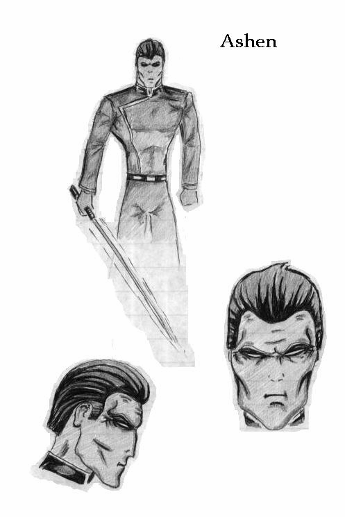
The most reserved of the four Dark Jedi, his mind is a cold and calculating one. Exiled from his homeworld because of his ability to use the Force, he trained in one of the Jedi Academies for a long time, but because of his anger at his own people for casting him out, was constantly tempted by the Dark Side. He prided himself on this constant struggle however, and was well on his was to becoming a Jedi Master, for he had no other real focus in his life, and put his all into his Jedi training. Things began to take a turn for the worse shortly thereafter, to Ashen's misfortune. One of the tasks an aspiring Jedi Master must complete is the successful negotiation of a conflict between two peoples, and the Jedi Council thought to send him to the peace talks between his own world and another that had been warring with his people, in the hopes that this would not only bring him close to his goal, but also help end his constant struggle with the Dark Side. They couldn't have been more wrong. Ashen refused vehemently, but the other Jedi forced him to go to the negotiating table "for his own good". The effect was disastrous; trapped on a world where everyone scorned him and the only other alien race present hating all of his people, Ashen could not control himself and finally lashed out with all of his hatred, killing everyone in the room, and condemning the two negotiating plants to hundreds of years of further bloody conflict. Through the Dark Side, Ashen discovered a sense of peace and righteous justice, and welcomed it with open arms, abandoning the Light forever. After it was clear to the Jedi Council there was no redemption in sight for the man, they ordered him to be exiled to a planet far in the Outer Rim. Leaving a device that permanently shielded him from the Force and instructing the planet's populace to stand guard over him, the rest of the Jedi left Ashen just as his own people had. Over the years in exile, Ashen's fury at being cast aside once more began to fade, and took with it nearly all emotion remaining to the man, who began to revert to using the cold logic for which he had once been famous before the entire ordeal had started. He began to play the residents of the planet like a master puppeteer, but before he had the chance to deliver his masterstroke and free himself, the Jocar invaded and sent everything into chaos. In the midst of the battle however, the device shielding Ashen was destroyed, and he gladly offered what aid he could to the invading race, lashing out at his captors, and allowing himself to be taken into custody by the Al'moreth soldiers and brought before Adon, who was overjoyed to find another "magic-user". Ashen offered to train Adon further, and the warlord jumped on the chance to learn more of the Dark Side. Ashen for his part, was a willing teacher, and Adon learned quickly. When word of Vader's call reached the two, Ashen was only too happy to assist, and Adon decided to come along in the hopes he could gain some assistance for his conquest in the Empire.[RK's note: I had to have a Thrawn lookalike in SWQ, and this is him. Just think blue skin, blue/black hair, and glowing red eyes...]
Ashen is a very skilled Jedi Master, and he presents a real challenge for the player. His use of the lightsaber should be nearly flawless, the player will have to win here through taking very quick advantage of any opening he can find. Ashen is also much more comfortable in using the Force then the two previous Jedi, and he certainly uses it to his advantage, leaping away from the player to blast him with Lightning, or using Inferno to distract the player while he performs a Dark Heal on himself.
The model should be split up into attachments, so that the player can cut off his arms or head when landing that killing blow.
- Idle
-Walk
-Run
-SaberChop
-SaberSwingLeft
-SaberSwingRight
-SaberThrust
-SaberSliceLeft
-SaberSliceRight
-SaberUppercutLeft
-SaberUppercutRight
-SaberBlockUpLeft
-SaberBlockUpRight
-SaberBlockLeft
-SaberBlockRight
-SaberBlockLowLeft
-SaberBlockLowRight
-UseLightning
-UseChoke
-UseDarkHeal >> this should be visible to the player, moves both hands to sides and visibly shakes, head whipping around once.
-Pain1
-Pain2
-Pain3
-ChokePain
-LightningPain
-Die
-DieNoHead
-ChokeDie
Ashen's voice should be like Thrawn's: cold and dispassionate. Thrawn's voice in TIE Fighter: Enemies of the Empire is perfect.
-[see dialog tree]
-SaberIdle
-SaberSwing1
-SaberSwing2
-SaberSwing3
-SaberSwing4
-SaberBlock1
-SaberBlock2
-Pain1
-Pain2
-Pain3
-ChokePain
-LightningPain
-Die
-ChokeDie
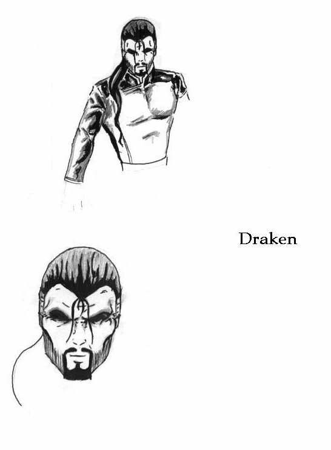
One of the Dark Jedi who came to Vader's call, and has now taken the position as leader of the Jedi Hunters, along with the other three Dark Jedi. Once a full-fledged Jedi Knight, Draken stumbled across an ancient book that described Kalthun Shadowstar's ability to pull the very Force essence out of another Jedi. At first his reasons were legitimate, he thought to "still" Jedi trainees who turned to the Dark Side, and thus make the galaxy a safer place. He and six other Jedi petitioned the Jedi Council for permission to research the project, and were successful, as it was assumed that the Force essence of the effected person could be given back, and this was far easier a method to control a Jedi then maintaining a constant shield. The research quickly determined, however, that only the Dark Side could fully enact this power, and it's use would result in the death of the subject. The Council was appalled and ordered the immediate banning of the use of such a power. Having been given a taste of it's potential though, the seven Jedi broke away and continued their research despite the order of the Jedi Council, their desperate desire for more power causing them to throw themselves to the Dark Side. They did so with such force however, that four of the seven instantly went mad, and a battle ensued, resulting in only Draken being left alive. He, too, was a little mad though, his only desire or real focus now was the gaining of more and more power. He continued his research without worry or care for the rest of the galaxy. That was, until he heard of Vader's call for Dark Jedi to assist in the Purge. Seeing a chance to further his research, he went, and the Emperor was very interested in Draken's "absorption" technique and agreed to allow him to "experiment" on some of the Jedi if he would assist in the Purge. Draken accepted and now pursues his task wholeheartedly.When the player encounters Draken on the battlefield, he has already absorbed the Force essences of hundreds of imprisoned Jedi, making his already considerably potential in the use of the Force magnified a thousandfold.
Though Draken is unbelievably powerful, his newfound resource has done nothing to increase his skill with the lightsaber. However, that skill is already considerable, almost exactly on the level of Ashen.
Draken's main concern, though, is with the Force. Harnessing his new-found power, he will primarily levitate up in the air and blast the player with a devastating lightning attack - a true Force storm - made of of several lightning bolts that strikes the player's position with a roar. The player can avoid this extremely damaging attack in one of two ways: a) using Reflect to re-target the attack back to Draken (there is an audible "charge" sound just before the lightning bolts strike), or b) if Reflect isn't available to the player, with some very well-timed dodging to just miss the strike. In order to get Draken back down to where the player can reach him with the lightsaber, he must be damaged, either through the reflected bolt attack, or one of the other ranged Force powers. Once Draken is brought down to the same level as the player, he can be attacked with the saber, and at this point is similar to Ashen in his behavior. Instead of leaping away to use Inferno, however, Draken blasts the player with a different attack, something new that unleashes a solid bar of white that causes damage on the level of the beam tube while at the same time pushing the player back a bit. This covers Draken's escape back to the air, where the process is repeated until the player finally brings him down.
The model should be split up into attachments, so that the player can cut off his arms or head when landing that killing blow.
-Idle
-FloatIdle >> hands spread to sides, cloak rippling
-Walk
-Run
-Leap >> tucks into a ball and spins
-SaberChop
-SaberSwingLeft
-SaberSwingRight
-SaberThrust
-SaberSliceLeft
-SaberSliceRight
-SaberUppercutLeft
-SaberUppercutRight
-SaberBlockUpLeft
-SaberBlockUpRight
-SaberBlockLeft
-SaberBlockRight
-SaberBlockLowLeft
-SaberBlockLowRight
-UseLightning >> raises hands up to the sky
-UsePushbar >> thrusts out one hand, palm outward
-Pain1
-Pain2
-Pain3
-ChokePain
-LightningPain
-Die
-DieNoHead
-ChokeDie
Ashen's voice should be like Thrawn's: cold and dispassionate. Thrawn's voice in TIE Fighter: Enemies of the Empire is perfect.
-[see dialog tree]
-SaberIdle
-SaberSwing1
-SaberSwing2
-SaberSwing3
-SaberSwing4
-SaberBlock1
-SaberBlock2
-Pain1
-Pain2
-Pain3
-ChokePain
-LightningPain
-Die
1.17 Sewer Creature:
2.0 Characters:
SWQ's character units are divided into three classes: player, non-player, or bystander. Each is detailed below.
The player has been taken straight from his quarters on board the Star Destroyer to the Jedi Academy planet, and is still wearing a generic gray Imperial jumpsuit. Other then that, he has no real distinguishing features, having a medium build and short hair. His jumpsuit should be just that - a jumpsuit, though it should be a little more exciting then that, perhaps with a gun belt strapped on. After training with the Jedi Master on Thalkos, however, the player's attire changes to something a little more "Jedi-ish". This should appear to be a little looser-fitting, and a cloak would be an excellent addition if its animation could be pulled off without a large number of polygons.
The player of course, controls the player model. The animations required are as follows:
-Idle
-Duck
-Walk
-Crawl
-Run
-Jump
-FireWeapon (X)
-EquipWeapon (X)
-DequipWeapon (X)
-ReloadWeapon (X)
-UseForce
-UseChoke
-ThrowSaber
-CatchSaber
-[saber attacks/blocks]
-UsePad
-Pain1
-Pain2
-ChokePain
-LightingPain
-Die1
-Die2
-Die3
-ChokeDie
-DisruptorDie
The Idle breathe, Duck, Walk, Crawl, Run, Jump, FireWeapon (X), EquipWeapon (X), DequipWeapon (X), and ReloadWeapon (X) animations should all be obvious in their function. The "(X)" on the end of the Weapon animations indicate that specialized fire/equip/de-equip/reload animations are necessary for each weapon in most cases. The UseForce frames should show the extension of the player's left hand, palm downward, much as Luke does when attempting to raise his X-Wing out of the swamp. This should only be used by powers that seem logical, however. A Push/Pull would use this, but a Heal would not. This animation is also used as FireLightning, except that now the lightning bolts are spawned around the player's hand and progress off to their target. UseChoke is a little different, and I thought warranted an animation all its own. In these frames, the player forms a fist and holds it out at a level just a little below his face. ThrowSaber and CatchSaber should be obvious, let's make sure that the catching of the saber looks solid (i.e. a little recoil of the arm). The additional uses of the lightsaber (attacks/blocks) are listed in section 6.0, Lightsaber Combat. UsePad causes the player to pull out a digital pad and appear to peruse it. This is used when the player is at a shop, or (if possible) when the console is pulled down in single or multiplayer games. Pain1 and Pain2 should be standard flinch frames, probably one to each side [RK's note: these may be expanded if location-based damage is included]. ChokePain is specialized, however, showing the player grab at his throat with his left hand. LightningPain is also unique, showing the player jitter back and forth very quickly, as if shocked by an electric current (or Force lightning, in this case). Die1 is a "simple" death animation, simply having the player fall to their knees and then over to one side. Die2 is as if the player was struck a hard blow in the head or upper chest, knocking them down onto their back. Die3 is similar, except from the other side. ChokeDie shows the player fall to their knees clasping at their neck, then fall forward onto their face. [RK's note: lightning doesn't need a special death frame, a normal DieX will do]. DisruptorDie isn't really a frame, but should be an effect. If a player is killed by a disruptor, instead of simply falling over dead, the player model is replaced by what appears to be a dissipating shower of blue/white "sparks".
The player's voice should be one suitable for a young military officer who's seen some action. We're not talking about a kid's voice here, or a grizzled "tough", but just a "normal" voice, though a slightly distinctive quality would be a nice touch. Think of the player's voice in Privateer 2, or Qui-Gon Jinn's from Episode I, they're perfect examples. Sounds needed for gameplay are as follows:
-Jump >> some sound of exertion, not as dramatic as the default Quake2 jump sound.
-FireWeapon (X) >> this will vary from weapon to weapon
-ReloadWeapon (X) >> this will vary from weapon to weapon
-UseForce >> this will vary from power to power
-[saber attacks/blocks] >> make the default saber "hum" a several block/attack variations
-UsePad >> makes some suitable computer beeps
-Pain1 >> a grunt of pain
-Pain2 >> a slightly more serious version of the above
-ChokePain/Drowning >> a sound of someone choking
-Breath >> used if the choke/drowning stops before death. Cough/deep inhale of air
-LightingPain >> a "jittering" scream, as if being shocked
-Die1
-Die2 >> Quake2 did a good job here, duplicating those with our voice should be fine
-DisruptorDie >> a variant of one of the DieX sounds, this one fades away very quickly as the player is ripped apart by the disruptor bolt.
Non-player characters (or NPCs) are those called for by the plot, and which the player can interact with. Note that these are different from bystanders, which are described in section 2.3. NPCs always have a specific dialog tree linked to them, and interaction is based on this dialog tree, which the player activates through the conversation system. Each player's dialog tree is listed in section 10, and placement/misc. info is detailed in the level(s) the NPC is seen in.
Levels Seen In: [introductory cut-scene]
Stationed on board the Dominance as commander of the planetary strike forces. Raised on Janen V, where his father (a Jedi) watched over him during his own Jedi training, the general grew up around the ways of the Force and it's use, but was never able to touch it himself, for in his case it skipped a generation as it is sometimes wont to do. During the time of the Clone Wars, the general's father became well-known both for his prowess with the lightsaber and his ability to always give hope to others now matter how grim the situation looked. Early on in his life, the general was taught in the ways of self-defense, and how to at least use a lightsaber, even if it was little more then a tool to him without the Force. The general eventually became a skilled swordsman, enough so that he was actually able to wield a lightsaber in combat, even without the Force to guide him, something that was unheard of. He was able to prove this ability often, for he was often in combat situations, having joined the armed forces of the Janen government and dedicating himself to both protecting the citizens and bringing down the smuggling ring based on the planet. In the latter struggle he was sadly unsuccessful, for the Janen military soon became corrupt under the black hand of the smugglers, and the general resigned his commission in disgust. Deciding to try a more peaceful life for once, he got a job as a cargo hauler, and eventually found a wife and had a son (the player). Domestic life finally proved too much for the general though, and he made plans to enlist in the Imperial armed forces after talking with a recruiting representative who he ran into. His wife, however, was less then pleased at this announcement, remembering a time when her father went off to war and never returned. In the end though, the general enlisted anyway, but was shocked to discover one day that his wife had left when he had taken their son to the Imperial Academy for the afternoon. Trying to raise a son and maintain a military career proved extremely difficult, but the general was equal to the task. His past experience allowed him to quickly advance through the ranks, and his skill with the lightsaber once more saved his life numerous times and was the subject of much conversation. The player followed right in his father's footsteps, entering the academy as soon as he was able and learning of the proper maintenance, use, and tactics of weapons and warfare from the day he was able. Graduating from the Academy, the player was posted to the Dominace with his father, who would oversee the forces stationed onboard. The general has no real love for the Empire, but it is his cause now, and he will try to remain loyal to it as long as he is able.
The general uses the standard Imperial Officer model, but his uniform is grey in color, and with a face more like that used on the player model, to provide a definite distinction.
Levels Seen In: Imperial Star Destroyer Dominance
Primary commander of the Dominance under Admiral York. Captain Coburn enrolled in the military academy after Imperial rule was already cemented, but advanced quickly. Recognized as an excellent commander early on, Coburn was stationed on patrols through the core worlds for several months before being promoted and reassigned as Captain of one of the new Star Destroyers. Some higher-level officials questioned whether is was wise to place so inexperienced an officer in command of one of these superweapons, but Admiral York spoke in his defense and Coburn proved himself a more then capable commander and a quick learner under York's tutelage. Loyal to the Empire, he does however question what seems to be the new stance on the Jedi. Coming from a world where the Jedi are held in high respect and recalling a time when a Jedi healer cured his very ill mother, Coburn sees no reason why they should be eliminated, and fears the galaxy will be a worse place because of their absence.
Also uses the standard Imperial Officer model, but the captain's uniform is green, with an added rank cylinder and more decorations then a standard officer.
Levels Seen In: Jedi Academy, Attacked Academy
This is a robed version of one of the Jedi bystanders. No specific features are required since this character will not be seen very long. The only item of note is that this character's model/skin combination should not be used anywhere else in the Academy level, to help distinguish him from the students.
Levels Seen In: Ionus IV Spaceport (1), Ionus IV Spaceport (2)
Head of a rapidly-growing communications company in the Outer Rim. An entreprenuering fellow who was willing to take a big risk, J'Dan started Resonance Communications after working as a technician on the Holonet for several years. Spotting the steadily rising growth in the Rim worlds, he secured transmissions rights fairly cheaply early on for a large number of sectors. Resonance Communications grew quickly due to this fact, making J'Dan a very wealthy man, and much moreso after the multi-billion credit deal to tie his network into the Imperial Holonet. His luck has now taken a turn for the worse, however. In his youth, J'Dan accidentally rammed the ship of Surok Tarsiss, who was try to escape from Coruscant officials for smuggling. Tarsiss and his crew were arrested because of this, and sent to Kessel for a very long time, but now that he's out, Tarsiss is looking for revenge. Forming his smuggling group again, he has taken over J'Dan's estate on it's moon and has managed to elminate most of J'Dan's guards as well, leaving the communication giant in a tough spot, since the local government refuses to help, and no one else is willing to take the job against Tarsiss. J'Dan doesn't really care one way or the other fore the Empire (or the Republic for that matter), but he is a man of his word and will help those who help him.
For J'Dan, we'll use a default NPC (no attachments), and a variant of the civr3.pcx skin that shows a small gold emblem pinned onto his shirt's left breast, a symbol of his communications company.
Levels Seen In: J'Dan Estate, Defense Base
Driven from his home by an expanding Empire that needed to build a new garrision headquarters on his world, Tay was unable to land a decent job and ended up dropping the last of his funds into purchasing some equipment and making a last chance gamble on the mines of Ionus IV. Being unusually successful, and proving himself to be a competent leader, he has become a key figure in the growing government on Ionus IV. Currently working under the title of "senator", he is spearheading the movement to clean up the planet and create a new home for some many of the others like himself that were driven away.
Tay appears only briefly, to persuade the player to help out in the defense of the planet. As such, a regular "rich" skin will do for him, but here we'll use a jacket as well.
Levels Seen In: Ionus IV Spaceport (2), Ionus IV Spaceport (3), Corusant Base (1), Coruscant Base (2)
(voice is present in all levels following Ionus IV Spaceport 3)
A member of one of the larger resistance groups opposing the Empire. One a nearby world picking up illegal weapons cheaply, Gova hear rumors of the Jedi Academy being attacked and decided to see if it was true, for possible use against the Empire. However, it was to his bad fortune that he was caught on Ionus IV just at the Imperials attacked "for expansion of the Empire". Seeing the player in action during the resulting fight, he decided to try and recruit him for the resistance. In the past, Gova had been a loyal citizen of the Republic, working at an up-and-coming droid programmer on Coruscant, with his wife (a hair stylist) and their son. All was going well in his life until Palpantine decided to make good his rise to power, organizing soldiers to secure the palace and place him as Emperor. Stormtroopers burst through the buildings initial defenses easily that day, just as Gova and his family were strolling down the Great Hall. Ignored by the troopers, the situation began to look a little brighter until reinforcements of the palace guards arrived from behind and one of the guards foolishly thought to break away and cover the innocent bystanders. Several of the troopers shifted their aim to take out this lone guard, and in the process, shot down Gova's wife and son, ironically missing the man standing right next to the guard. Mad with grief, Gova grabbed up the fallen guard's blaster and let his former military training do the rest, taking out the four remaining Stormtroopers the Republic guards had not been able to bring down before fleeing to the city's lower levels, where he heard of the resistance groups already being organized. Thus, in a moment of haste was another enemy created for the Empire.
Since Gova is seen so often he needs to have his own distinctive look. Since we have several of the Han Solo-eque "pilot" skins for the bystanders, we can reserve the blue variant for Gova. To further drive home the distinction however, let's have a rebel logo painted across the back of his coat.
Levels Seen In: Thalkos
Living on Thalkos, Master Siar has been training Jedi for nearly 50 years. Coming from a planet where the populace is especially long-lived, Siar found himself with both the ability to use the Force, and the life span to take the time to truly master it. He had a definite will to learn, and studied long and hard, eventually achieving the rank of Master and setting out on his own. Finding the sparsely populated world of Thalkos to his liking, he settled down and began to teach Jedi, as he had been taught. He was successful with all of his students, with the notable exception of Be'lot G'shan, after who's turning to the Dark Side he stopped teaching for a time. However, after some assurances from friends and colleagues, he began to accept students once more and gladly takes the player for a new Jedi pupil. Like most Jedi, he has no love for the Empire or the Emperor.
The robed Jedi bystander model is used again here, but this time it should have a custom skin that has a color scheme all its own, and a separate face should be created as well.
Bystanders are essentially just NPCs, and like NPCs exist only to liven up the game atmosphere a bit. However, bystanders differ drastically from NPCs in that they respond to the game world around them. If a player comes bursting into a room with guns blazing, one would not expect any defenseless people in that room to sit still and be killed.
A bystander works something like this: placed into the level by the mapper, it has a default action assigned to it via the entity (i.e. kneel_work, sit_talk, etc.). Unless something occurs to make the bystander change its course of action, it will continue to play this default animation, along with any accompanying animations to further add to realism (i.e. sit_talk could be interrupted occasionally by sit_drink or sit_agree). These default actions will be interrupted, however, as soon as one of the following happens:
-the player talks to the bystander
-either the player or an enemy begins to start firing weapons
In the first case, all that will happen is that a conversation dialog will appear and display one of the random messages used for normal bystanders (i.e. "Leave me alone, I don't want any trouble" or "I haven't got time for you, let me be."). The second case, though, is what really makes up a bystander. If any of the bystanders near the player hear weapons being fired, their "response code" is triggered, and they will do one of the following:
-run and hide
-cower where they stand/sit
-ignore everything if they're "asleep"
-draw a weapon and attempt to remedy the situation themselves
If the bystander is set to hide, then that bystander will locate the nearest "hide waypoint" (set in place by the mapper), navigate there, and loop its cower frames. If it takes damage again while at the "hide waypoint", then it will attempt to locate another and navigate there. If a bystander is set to immediately cower, then it will simply loop its cower frames in the position it is already at, being too frightened to move further. If a bystander was initially flagged as being "asleep", then it does nothing but continue its default action. If a bystander decides to attack, then it ceases to become a bystander and turns into an enemy, firing upon anything (including both enemies and the player) that's not a bystander.
Using the normal Officer model (that used for the enemy version), this is the simplest form of bystander, only requiring one additional frame of animation:
-stand_work >> moves hands about as if typing on a console
This bystander does not ever cower or hide, it will always attack. However, rather then attacking anything except other bystanders, the Officer will essentially become its enemy version, attacking only the player.
The most commonly used form of bystander is the default or standard one. It has both male and female variants, which are identical in behavior. That behavior is as follows:
-Idle1 >> a simply idle stand/breathe
-Idle2 >> moves about a bit more/plays with the object in hand
-Walk
-Run
-Talk >> makes slight body movements as if speaking
-UsePad >> seems to peruse the pad
-Drink
-Pain1
-Pain2
-ChokePain
-LightningPain
-Die1
-Die2
-Die3
-Die4
-SitIdle1
-SitIdle2
-SitTalk
-SitUsePad
-SitEat
-SitDrink
-SitPain
-SitChokePain
-SitLightningPain
-SitDie >> all are sitting variants of the above
-Sleep >> sitting animation, puts head in hands at table level and appear to sleep/breath regularly
The only behavior notes for a standard bystander other then those already discussed above occur when the bystander is flagged as either a shopkeeper or an NPC. When marked as a shopkeeper, the bystander will always simply cower in place, it will never move. Also, no conversation script it set to this bystander, it points to the trade system instead. When marked as an NPC, the bystander cannot be killed, and will not hide, cower, or attack. This is necessary because interaction with NPCs is necessary to carry out the plot. Also, the look for a default/standard bystander can be further varied through the use of "attachment" models (jacket and helmet/hat) and the wide variety of skins available. These elements, too, are specified through the entity. To clarify, then, each of the following are variables for a standard bystander entity:
-body_model >> determines body model (male, female, etc.)
-body_skin >> skin used for the body model
-head_model >> model used for the head
-head_skin >> skin used for the head model
-jacket_model >> determines if the jacked attachment is used
-jacket_skin >> skin used for the jacket model (if active)
-voice >> determines the sounds files used by the entitiy (male/female variants)
-script >> points to the script file used in the conversation system. "default" will set it to one of the random default messages
-NPC >> if set to true, sets the bystander as an NPC (can't be killed, won't ever move, cower, or attack)
-shopkeeper >> if set to true, sets the bystander as a shopkeeper
-default_action >> determines which frames/sets of frames will be looped by default
The final item required for the standard bystander is that of the sounds:
-Talk >> a looping sound of people conversing, just below being understandable
-UsePad >> makes a few quiet beeping noises
-Pain1
-Pain2
-ChokePain
-LightningPain
-Die1
-Die2
-ChokeDie
[RK's note: this might be added into the standard bystander entity, and the worker model and frames could simply be selected there]
The worker, which also comes in male/female variants, behaves in exactly the same way as the standard bystander (2.3.2). The only difference between the two is addition of a few extra default frames/frame sets that are used only by workers:
-Work1 >> kneeling down, with a welding tool pointed at the ground (code spawns sparks)
-Work2 >> also welding, but pointed in at something about chest level instead of the ground
-Rest1 >> lifts up visor and wipes forehead
-Rest2 >> stretches
-CheckPad >> a variant of the standard bystander's UsePad, except this looks as if the worker is inspecting progress and making notes.
The entity setup is the same as the standard bystander's as well, except for these additions:
-gear_model >> determines whether or not the helmet and boots "gear" attachment is used
-gear_skin >> if the above is true, determines the skin for said attachment.
The sounds used are identical to those of the regular bystander, except for this addition to complement the work frames:
-weld >> the sound of some kind of welding tool be used
Again, animation and behavior is exactly like that used for the regular bystander, only with a separate Jedi model. Also, a Jedi will never hide or cower, but will always attack.
No special attachment or entity additions are needed, but a new sound set needs to be recorded using a more "Jedi-ish" voice.
Aside from the default, worker, and Jedi bystanders, SWQ uses several droid bystanders, which exist only to add to the visual environment, they do not attack or hide, but merely wander about the level, and display their appropriate animations. These droids are: the R2 unit, the gonk, the "mouse" droid, and the load lifter.
There are also several "critters": the bird, the fish, the bugs, and the "rathopper". Each of these has a little more unique behavior. The bird has waypoints like the more complex bystander, which tell it where to display what frames (i.e. peck ground, ruffle wings, etc.). These are scattered about the level, and the bird simply makes a circuit of them as time goes on. The "rathopper" has an identical behavior, though of course it does not fly. The fish and bugs, on the other hand, are merely placed in the level, and from there they just ramble about.
Each level in this section is detailed according to its look/general layout, any specific layout instructions, special considerations required by the level which results in work from of the departments being needed, musical elements for the entire level, and any other misc. items that are noted.
Lead-in: Introductory cut-scene
Lead-out: Cut-scene of the Dominance approaching, Attacked Academy
[RK's note: This level has already been done, so most of this info is irrelevant now...]
The Jedi Planet (indeed, it is known by no other name, simply MPX-1755329-5 on the charts), was apparently once inhabited by a thriving culture. However, the planet's orbit takes it remarkably close to the system's sun every 3,000 years (it's uniquely large and slow orbit was the subject of some study for a time, but the project's funding died out and the planet was forgotten). This nearness to the sun is enough to create unbearable temperatures upon the planet's surface, making it uninhabitable, and burning away nearly all traces that anything had ever existed there.
Yet once something did exist there, and in what might have been a last-ditch effort to survive, some buildings were carved from the rock of the planet's surface itself in an attempt to flee the searing heat. Whether the attempt worked or not is unknown, but many of the buildings still remain today, including what appears to be large temples throughout a stretch of canyon. It is these temples that the Jedi have claimed for their Academy.
The temples are made mostly from the rock of the canyon walls itself, though it has a rough texture, as if carved with rough tools, though some sections, and the floors, have been worn more or less smooth with time. The architecture is a strange mix at times, being ornate in some locations (and thus the interpretation of the buildings being a "temple"), and remarkably functional at others.
1) The Canyon Itself
The canyon is made of a strong tannish rock, like most of the rest of the remaining surface. It scales to only moderate hights, not reaching much farther up then the tops of the buildings. Narrow along the bottom, there is enough room for perhaps four people to walk abreast, but no more. This walkway was apparently tiled by those who built the temples, but time and weather have worn these tiles away to bare rock in places, and in others fresh rock formations have jutted up, breaking away the tiles. One other interesting item is near the canyon's junture, at which a stream of what must be underground water has broken through, running a thin line of water across the canyon floor. The canyon also makes a moderately tight turn near the end (the above-mentioned juncture), at which point the high cliffs drop away into a bowl-shaped area that is also tiled, and in the Academy is used as a practice yard. On the side of this yard the parched land gives way to a flourishing forest, through which a path has been cut by the students, and a little way off is a landing pad on which supplies are delivered.
2) The Student's Quarters
This building is the least ornate of the two in use, being built mainly for housing originally (or so it was believed), and it still is used for this purpose today. Upon entering the open-air entrance, you find yourself in a common room, in which burn several glow panels to provide light (these are also placed periodically throughout the building), some sturdy wooden tables and chairs against the wall, and two elements of technology that have been added directly into the walls themselves; a communications station and food dispenser. Off to the right and left stretch two halls, which open onto the students' individual rooms, each able to be closed off with a thick wooden door. At the end of the halls are worn ramps that stretch up to the next level, which follows the exact same design, except that middle common-room area has a higher cieling and a circular opening that let's in sunlight (and rain when it comes, much to the dislike of the second-floor students).
3) The Main Building
This is the main training/administration building, and as would be fitting, is the largest of the remaining temples, and also the most ornate. The students and instructors have also made some modifications in places here, as it probably wasn't designed with the education of Jedi in mind. Upon mounting the short flight of wide stairs leading to the entrance and entering the doorway, you find yourself in a large room with a raised altar in the center, the light shining on it from the flared circular hole in the ceiling creating a stark contrast around the altar with the rest of the dim room. Off to the sides are doors, one in the center of each wall, except for the far wall facing the entrance, in which there are two. Following either of these doors will lead to a polished hall, and open into a room that has almost completely been re-done by the Jedi. Originally believed to be the preparation chambers for the sacrificial priest, this room now has vigorously polished floors, a large display, and an added stair and walkway for further capacity. Here is where assemblies of all the students take place. The door to the left leads to a simple hallway, which splits off three times to form classrooms, where wooden benches have been set up facing one wall, from where the teacher can instruct his students (RK's note: be creative here, add tables with objects to aid in instructions, perhaps a hologram, etc.). Finally, the door on the right of the main room leads to the administration area, where exists the offices of the Academy heads, and the door to the stairs leading to their quarters (though this is locked when the instructors are not present in them, to prevent students from poking into belongings that would be too dangerous for them). Here there is also a storage room, in which a large amount of objects appear to have been thrown in haphazardly, or stuffed in crates and left until needed.
4) The Practice Yard
This is where the more combat-related training is done, with students going through practice duels and instruction in lightsaber technique. Along one edge of the yard targets have been constructed for those students wishing to practice on their own, and there is also a small, squat buildings that actually exists outside of the canyon walls, where the practice lightsabers and other weapons have been locked safely away, and where the yardmaster can instruct students out of the heat of the yard. Also, a pair of speeder bikes are parked in the shadow of this building, so that they are ready to go down the forest path should a ship come in.
5) Misc.
There is also one other building carved into the canyon face, but only it's ornately worked front can be seen, as an accident with a student many years ago caused the building to collapse in on itself, and part of the outer walls have broken out as well, rendering the building unstable and unable to be repaired. There is also the landing pad out in the forest, which is a permacrete square with faded yellow lines to guide the landing ships. There is also a small control building that has been constructed, and though there is a transparisteel window into which someone can view the lighted consoles, the building is kept locked at all times when not in use.
The progression of this level is as follows: The player awakens in his crashed shuttle, and must travel a little distance to the Academy grounds. At this point, we recieve the introduction to the Jedi Master [RK's note: this could be via conversation, cut-scene, or the "alternate cut-scene" format, undecided as yet], after which the player is given free run of the grounds and is allowed to train a bit (upon entering this level, the player receives access to his basic Force powers). After the player returns to his quarters, the cut-scene of the Dominance approaching and attacking the Academy plays, then the player is placed in the midst of the batte and must fight his way to the cargo ship and get off-planet.
The Academy requires a few special entities, mostly in the form of bystanders and training devices. To create a realistic, operating Jedi Academy, we obviously need to populate it with people, which is where our bystanders come in. These can be placed as the mapper sees fit, so long as there are enough of them to be convincing, and they seem to be doing realistic tasks. We definitely want to place a few of the sitting versions in the student quarters, placing them on chairs, beds, etc. Some special animations/groupings will be required for the practice yard, where we want to place at least three practice duels, with the yardmaster overseeing them. These animations are dealt with further in section 2.4, Bystanders.
Some training devices are also in order, to give the player a little more experience with his fledgling Force powers. These need to be simplistic, and explained by bystanders at each location. First off is a special version of one of the Jedi bystanders who has a unique conversation script. This script allows the player to activate/deactivate the special bystander, which will cause it to engage/disengage the player in a practice duel, using a special lightsaber that only does 1 point of damage when it hits. This bystander cannot be killed, either, and has a lightsaber behavior similar to Ashen's in that it does not make any real mistakes, and serves as a good learning point for the player. The second training device is the required saber remote, which can be activated, and lets the player test the saber's blocking ability for a while, then can be deactivated. Finally, to test Force push and pull, there are a pile of rock models which can be moved about.
The initial Academy level's focus is more on wandering/learning then anything else, and for this we want some rather subdued, meditative background music -- nothing blaring or really adventurous, Yoda's Theme is a good reference point.
Lead-in: The Jedi Academy, attack cut-scene
Lead-out: Capture cut-scene, the Dominance
The general structure is exactly like the Jedi Academy (3.1), but there are some significant changes. First, the entire lighting level is lower, to make the firing of the blaster/turbolaser bolts more dramatic. Second, major portions of the Academy has already been destroyed by the barrage from the oribiting Dominance. The overhead bridge has collapsed onto the grounds below, crushing two of the students. Some portions of the canyon walls have fallen away, leaving scorch marks from the turbolaser blasts on the walls in their place. In the interior rooms, the main gathering hall's roof has been blasted away in several places, the skylights are now much larger thanks to the damage. The exit to the "rest" area has completely collapsed, some of the student quarters are looking on the verge of it, and the main building's columns are cracked and in immediate danger of slipping, the roof above is showing several large cracks.
Aside from the physical level, and the attacking turbolaser bolts (described below), the Academy still contains some Jedi, who are battling it out with the stormtroopers who have begun to pour into the canyon. The situation should appear immediately hopeless to the player, his only option is to get to the hangar and from there into one of the cargo ships that had been delivering supplies. On his way, the player should encounter plenty of resistance, but not so much as to make the trip virtually impossible in his under-armed state. Once the player reaches the cargo ship and climbs aboard, the level ends, and the player sees a cut-scene of his attempted escape from the planet and capture by the Dominance.
We want to create a convincing sense that the Academy is under attack and being destroyed by a ship with the power to turn any planet surface into slag. Aside from a little creative level work, that's going to require a few other effects to pull off. First, some simple falling rock models can be created and placed in the interior portions of the Academy. when these are triggered, they display a few models of falling rocks, play a suitable rumbling/collapse sound, and cause some damage to the player if they are in the debris path (the entity). Second, we can create a large turbolaser bolt model, and have it appear to be firing from the atmosphere above, by spawning it there and targeting it at a random bystander or the player. This should be fairly slow moving (giving the player time to get away), and sound a fairly loud "whoosh". Upon impact with an object, there's a flash of light, and a significant amount of damage done, accompanied by a "boom" sound. This might even cause a brief earthquake. [RK's note: Perhaps to top it all off, have a storm caused by the atmospheric disturbance occur?]. Finally, a few "dead" versions of the Jedi bystanders are required, to place in locations such as under the collapsed bridge, and add to the death&destruction atmosphere.
The theme here is panic. The place is being destroyed by the orbiting Star Destroyer, Stormtroopers are pouring in, the player's only hope is to get to the cargo ship and get the heck out of there. As such, we want something suitably intense and hopeless-sounding.
Lead-in: Capture cut-scene (end of Attacked Academy)
Lead-out: Escape cut-scene, Ionus IV Spaceport
The Dominance is set up to be on of the main features of SWQ's levels: an accurate modeling of a large portion of a "real" Star Destroyer. I've supplied all of the general blueprint images I could find on the web site, and we want to construct the level around these, maintaining the logical system locations wherever possible.
[RK's note: since this is already done, there's no real reason to elaborate. However, here are the blueprint images for reference: [image1] [image2] [image3] [image4] [image5] [image6] [image7] ]
None. The Dominance requires only standard enemy/bystander/item entities.
The levels that make up the Dominance can take some time to complete, so we don't want the music to get overly repetitious. Since this is one of the more intensely Imperial locations in the TC, something in the vein of the Imperial March would work well.
Lead-in: The Dominance, escape cut-scene
Lead-out: J'Dan Estate
Ionus IV was never naturally inhabited, and being in the galaxy's Outer Rim, was for the most part ignored. However, that changed about fifty years ago, when rich deposits of baradium (or some mineral anyway) were found in the planet's surface by a wandering prospector, drawing people by the thousands to mine the substance. Over time, cities sprang up, and the previously-ignored world gained a bustling populace. The look of the planet's architecture is far from pretty however, most structures were simply thrown up as quickly as possible, and now are starting to show some wear and tear as money is devoted to the mining process. Thankfully however, Ionus IV has now established a government under the Miner's Guild, and it is working to not only supply the mining firms with what they need, but create a functional world as well, starting a number of new programs, including a massive reconstruction project to "clean up" the planet's look and make much-needed repairs.
The planet's spaceport should have the look of a hastily constructed building that is barely funtional, and starting to become a bit run-down. It's a two-level hexagonal-shaped building, with a central room, and adjoining "areas" that take up each wall: 1) two shops (weapons and supplies) that are built directly into the walls themselves, with a shopkeeper NPC behind the counter and visible supplies/weapons on the walls (just brushes). When the player steps up to the counter, he will enter a "trade entity" which spawns the game's trading system and allows the player to buy items to add to their inventory. 2) The door to the hangar where your ship is stored. Here we'll need a "player_ship" entity, which checks which vessel the player currently owns and displays the correct model. When the player enters this entity, it will spawn the level end/cut-scene showing the leaving of the planet/pop-up navigational system. The hangar doors should be fairly hefty-looking and bare metal with caution stripes, and require the player to press a control to open them. The storage area for the ship itself should be fairly small, with closed overhead hangar doors, a catwalk that runs the length of the room (this should have an emergency health station on it at some point), two doors, one on the catwalk and one on the main level that are both locked and give the message that the player doesn't have access to this area, and any misc. items we can put into the room without hurting framerate (toolchests, droids, inputs for refueling hoses, etc.). 3) The door to the public transit system, which in this case opens onto the loading dock for an underground railway system. The train doors won't open until the player talks with J'Dan, in the... 4) Bar/Cantina. This is a fairly seedy-looking, dimly lit room but is actually one of the better places for a quiet drink in the city. There's a few tables and chairs around with bystanders, and a bar along one wall, but in the table immediately in front of the player as he enters is J'Dan, whom the player can talk to and take the assignment to clear out his estate of the smugglers who are taking it over. 5) Finally, there is a locked and guarded door which the player cannot access in this level that leads to the building's second story, which contains the control room that will be critical in the second visit to the level.
The spaceport's overall look should be functional, with stark metal contrasted by browns and greys in wall panels and furnishings. As mentioned above, it should have a little of a run-down look, with streaks and stains in the metal, torn wall panels, and perhaps some burned out glowpanels (which could be replaced with portable light sources that are set up near the same area). In the hangar, the floor should definitely be stained from fluids/blacked from engine exhaust, and everything should have a sufficiently "greasy" look that one would associate with a ship maintenance area. Bystanders should be common, with J'Dan likely being the only "rich-looking" individual. As also mentioned above, the government is starting a program to reconstruct/repair their facilities, so I think a nice touch would be a couple of workers at one spot in the main wall removing some wall panels and starting to put new ones in place, or replacing a burned out light, etc.
A few special entities are needed for the level. First, we have J'Dan, who should have a dialog tree linked via the conversation system. Once the player agrees to help J'Dan out, a "pass-card" to access the rail system should be placed in the player's inventory. Also, the trade entities are required to make an appearance here. This works in the following way: there is an inaccessible "booth" area where a bystander stands behind (perhaps with a jawa, etc. out front), and immediately in front of that is an invisible entity that spawns the trade system when entered, thus giving the illusion of the player interacting with the shopkeeper. Finally, the player can see his ship in the hangar, and since the ship the player currently has is variable, a player_ship entity is required, that reads what ship the player currently has, and displays the correct model. If the player enters this entity, the navigation system pops up and allows the player to leave the planet.
This should be a simple theme, but one that relates back to Star Wars in some way. In this stage of the level, no combat occurs, it's just a "conversation" level, so you can be creative and come up with whatever you like.
Lead-in: Ionus IV Spaceport (1)
Lead-out: Defense Base
[RK's note: You may want to see 2.2.2 "J'Dan" for a little more information]
The J'Dan estate is a pretty posh joint, and should show off some impressive architecture, and plenty of evidence of J'Dan's wealth. Below is a proposal for a layout of the house, along with some really quick sketches of misc. items:
[INSERT IMAGES FROM HTML VERSION!]
[RK's note: You don't have to follow this exactly, this is just a starting point]
The player's goal here is simply to eliminate all of the smugglers who have decided to take up residence in the house, progressing from the first level to the second, until the player reaches the last room, where the head of the smuggling ring has set up shop with his protective (and deadly) security droids. Once the player manages to take out the droids and get rid of the smuggling head, the train reappears in front of the house, along with a standard human NPC, who informs the player that a ground assault from the Dominance is imminent, and persuades the player to get to re-take the defense base and attempt to get rid of the Star Destroyer.
The first level shouldn't be too difficult, as the player has the advantage of surprise, and most of the smugglers were not expecting to be attacked. The second level changes all of that though, the smugglers did make some defenses against attack, and those are in place and operating now that they know the player is here. These might be in the form of bombs, blaster traps set up around a door, etc. The goal here is to make the player have to think a little bit. It is impossible to simply run straight through the second level, the player will need to make some trips to the basement to cut off power to certain areas so that traps can be disabled, or he might have to take a little side exit through an air duct to circumvent a bomb.
None. The J'Dan estate requires only standard enemy/item entities. The only item I want to make specific note of here is the train that transports the player here. This is an underground rail system, which takes advantage of some of the old abandoned mining tunnels that are spread out under the surface of the whole planet. At "stopping points", it comes above ground to let passengers off, something like this:
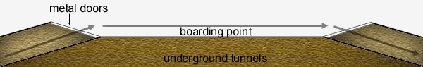
At the junction points where it re-enters the ground and continues on its circuit, there are metal hatches that seal off the underground tunnels from debris or the curious citizen. In the case of the J'Dan estate this is particularly important, because the player arrives on the train, and then must leave on it as well. As has already been noted, the train is recalled upon the death of the head of the smuggling ring, and after the player accepts the bystander's proposal to do what he can at the defense base, the player is allowed to board the train and head off down the tunnel and into the level_exit entity. Thus, the reason for the doors: to keep the player away from the very short tunnel and the level_exit.
[RK's note: No, the way the rail system is set up here on Ionus isn't very realistic, but I wanted a little variety, and this seemed the best way to do it]
This occurs on the same planet as the Spaceport level (Ionus IV), so a more action-oriented version of the theme used in the Spaceport would be good, and add to the feeling of consistency.
Lead-in: J'Dan Estate
Lead-out: Ionus IV Spaceport
The defense base has already been hit and occupied by the Imperials, so the player can expect no help from anyone inside. Upon exiting the train, the player finds out he's already in trouble, as there are two AT-ST walkers patrolling the grounds around the base. Eliminating these isn't necessary to gain entrance into the base, but they'll be dealing some heavy damage to the player on the way in and out if he doesn't take care of them. The base grounds aren't very large, there's a thick wall surrounding them, but the blast doors that normally restrict entrance have been blown off, allowing the player immediate access (though he also meets immediate resistance in the form of the walkers). The base itself is a bulky protrusion from the ground, with the only distinguishing features being the blast doors that allow entrance and a few vents. On the opposite side of the grounds from the door, however, is one of the large turbolaser emplacements that have been (fairly recently) installed on the planet for defense. This should be a big quad-cannon, with a fairly menacing look. [RK's note: I believe Avalanche has already constructed this, check the dev FTP site] Aside from the two walkers, some other features to decorate the grounds with might be nice, and would also provide cover for the player against the walkers. (i.e. additional vents from the wider parts of the base below, some speeder bikes, storage crates against one wall, etc.)
The interior of the base consists of three levels, all extending underground. The first level houses the primary fire and shield control, the second houses the secondary shield control and the power generators, and the third level is made up mostly of maintenance and power control equipment (not extremely large). When the player arrives, the main reactor has been shut down, disabling both the ground emplacements and the planetary shield. The shield is in worse shape, though, as it hadn't been calibrated to withstand the barrage from the Dominance, and overloaded in the assault, completely burning out the primary shield controls (this room should have some scorched/blackened, bent control panels). The first thing the player needs to do is get the reactor back on-line, and to reach that, he's going to have to go through most of the troops that have been left behind at the base. Once the reactor's up and running, the power has to be re-routed around the burned out circuits to the secondary shield control on the second level, and also back to fire control. Once the shields are back up (only 50%, but it'll have to do), the player can get to fire control and start the ground emplacements firing on the Dominance, which results in the ship's destruction. Captain Coburn shouldn't have been so confident.
Leaving the base is once again achieved through the train, which is recalled after the ground emplacements are activated. The "Train Guy" makes another appearance as well, congratulating the player on his success, and informing him that the planet's residents were able to repel the troops that landed at the Spaceport with only a little trouble, so the player can once again leave at any time.
[RK's note: Avalanche did a good portion of this level before he left, someone should be able to take up the rest easily!]
The firing upon the Dominance should be a good show for the player. I'd like to make a visible turbolaser emplacement on the base active, and show the quads firing when the player sets the computer to target the Star Destroyer. We should hear some fairly large blasts and be able to see the same large turbolaser bolts used in the Attacked Academy (3.2) streak off towards the atmosphere. The player might even experience a slight earthquake to simulate the explosive recoil of the quad cannon.
Once again, the train is important, and should be handled in the same way as in the J'Dan estate (3.5).
This is still on Ionus IV, but since we probably do not want to use the same track over again, the track used on the Dominance will be adequate.
Lead-in: Dominance destruction cut-scene (Defense Base)
Lead-out: Coruscant Intel Center
This is almost exactly like the existing Spaceport level (3.5), with a little shifting of the entities. J'Dan has a new dialog tree, and Gova is also present in the bar. A few small changes are in order, however. First, there should be a little evidence of the attack by the Imperials: blaster scorch marks on the walls, and the previously locked door to the control room should be blown open, giving the player access to this area, where he can see a couple of the control operators at work.
The J'Dan NPC is once again required, with his second dialog tree, thanking the player and paying him his reward. Gova is here as well, and offers the player a position among the resistance group here on Ionus IV, and informs him of their plans to launch an attack on the Coruscant Intel Center along with another group stationed right on Coruscant. The player will eventually agree, and persuade Gova to expand the mission slightly to search the Imperial records for information on just who he is.
The same as before (3.5).
Lead-in: Ionus IV (2)
Lead-out: Coruscant Base
A symbol almost as strong as that of the Imperial Palace, the Imperial Intelligence Center (IIC) on Coruscant is a place that inspires fear in the hearts of creatures with enough brains to know what fear is. The fact that the building's structure is far simpler then that of the Palace makes no difference whatsoever. In fact, the simplicity of design seems almost more deadly, as one cannot help but wonder what lethal surprises await those foolish enough to brave a venture on its grounds. The jealously guarded secrets of the Empire are protected by thick durasteel walls capable of withstanding anything short of a direct attack by a Star Destroyer, regular TIE patrols, and an elite stormtrooper division who's sole task is to watch over the grounds. Inside, the security is just as tight, with more Stormtroopers, regular troops, automatic turetts, blast doors, and even some of the expensive security droids.
Thankfully for the player, however, an oversight on the Empire's part allows the resistance group members to slip past most of the heavy artillery. After the player agrees to help ou the resistance group, Gova explains the situation with the Emperor and the increasing number of resistance groups. Acting with another group on Coruscant, those who have taken up residence on Ionus IV are planning a strike against the IIC itself, to steal an Imperial Order of Battle, Schedule, and whatever other information they can get. The player has also pressed Gova to allow for a search of just who the player is in exchange for his help, which is the player's main motivation for joining in on the mission. The two groups will be taking advantage of a security oversight to slip into the building through the Imperial City sewer systems and right into a lower basement of the IIC.
The sewer and lower basement of the IIC should look as if they have not been visited in quite some time, showing some signs of wear and tear (stains, a nest for the "rathoppers", etc.), the player should only be able to tell that this was at one time gleaming metal. The sewer/basement areas aren't devoid of life, however. There are plenty of "rathoppers" scurrying about, one or two grimy bystanders that have been driven down here, and some kind of creature in the sewer waters (see 1.17). From the basement area, the player can proceed down a short hallway and up a narrow flight of stairs to a sliding trap door, which leads to a little-used storage room, but a change should definitely be evident. Instead of flat metal/concrete, the floors are now carpeted, and the walls are in significantly better condition -- this should appear as if it could belong in any of a hundred nice office complexes. Outside of the storage room is much similar, the player finds himself in a hall leading off to the rest of the building, where he encounters the first signs of resistance, in the form of some regular troops amid the working bystanders, desks, and offices. The player progresses through this area to the 'lifts, which will bring him to the upper levels. These should again be a fairly marked change from the offices below, having a more military feel, and little of the artistic decoration found below. The player must fight his way through this level to the central computer chamber. This room should be dominated by three computer cores, stretching from floor to ceiling, and surrounded by consoles, cooling units, and backup systems. In the center of the room is the main access station the player is concerned with, accessing this will cause him to download the information he came for. [RK's note: this might be a level break here] Getting out is achieved by continuing on to the roof, and there are two ways the player can get there. 1) He can go back the way he came, and fight his way through the horde of re-enforcement’s that have arrived and get to the 'lift, then take that up to the roof. Alternatively, 2) the player can open an emergency escape door right in the computer control room. This door should be clearly marked (slides into the wall, striped with a red "FIRE" printed), but is locked, and displays a message to the effect of "only opened during fire emergencies". The player can go to one of the other consoles (marked: "environmental control") and bring up the control menu, then trick the computer into thinking there's a fire, thus causing alarms to sound and the door to open. Now the player can run onto the lowly lit stairwell and follow it up to the roof. [RK's note: the idea here is that emergency aircraft could pick up people faster then they could get to ground level]. Once there, the player has a few more Imperials and a pesky TIE to deal with. When the TIE is out of the picture, the resistance group's transport will make an appearance and land on the roof. Once the player jumps inside, the level ends.
The sewer section needs a significantly fearful monster, something that has evolved to the point where it can survive in the Coruscant sewers, a sort of mutated sewer snake. The office areas should be well decorated, taking advantage of our generic model entity to show off some plants, etc. A nice touch here would be to have some destroyable statues, which spawn some debris models. The only other item I wanted to make note of: if we can manage it, aside from just having the player face a TIE on the roof, setting up a sequence where a different TIE blasted away a portion of a glass wall in the lower-security area and attempted to attack the player through the newly-created hole would be interesting.
This might be the Dominance theme again, but I would rather see something unique. This one is definitely action-oriented, but should still have some of the militaristic qualities of the Imperial March. [RK's note: we'll talk on this one]
Lead-in: Coruscant Intel Center
Lead-out: Thalkos
The player is taken to the base of the resistance group here on Coruscant after sucessfully retrieving the data. This should appear to be buried somewhere in the depths of the city, and not very pretty. It's a very small level, only consisting of a few small rooms. The player finds himself in a very narrow room with a bed and a small table crammed between it and the wall. There's barely enough room to move to the door. Stepping out reveals a larger room (but still small, if that makes sense), where a table and some mis-matched chairs have been set up, Gova is sitting in one, and will fill you in on the details of what they uncovered from the data when spoken to. He also says they weren't able to crack your file (some new code), but they did get "Jedi 3571" out of it, and he suggests that you go visit a Jedi Master on Thalkos that one of the resistance members caught word of, since the group will be doing some serious re-organizing after learning just how powerful Palpantine is. The rest of the room is given over to some junk piled against the wall, and a couple of crates. An adjoining room contains a communications console that has been installed, and a bystander working at it. This fellow actually doubles as the group's supplier, he acts as a vendor/shopkeeper, and can set you up with some of the more illegal items for the right price (such as a disruptor). There is one more door, which appears to have been newly installed and looks fairly secure that leads out to a hallway where there's a lift in one corner that will take the player up a (long) way back to the landing silo complex so that he can leave the planet.
Gova is here, and reports the findings of the information taken from the Intel Center. It is apparent that the Imperial forces are much stronger than anticipated, and the group decides to cease attacks until they can make contact with some of the other rebels and attempt to combine forces. Taking advantage of this lull, the player decides to go in search of another Jedi to assist him in discovering his abilities with the Force. Gova can't help here, but he does give the location of Thalkos, a planet where he heard a Jedi Master was residing.
The Ionus IV (3.5) music could work here, the player won't ever be here very long.
Lead-in: Coruscant Base
Lead-out: Initiation cut-scene / Jedi Council (Coruscant)
Thalkos is the pet project of a group of four extremely rich CEOs who are working to create the Holonet. Formerly a barren planet of little else but rough soil, these four have devoted credits to fund an extensive terraforming project, converting the atmosphere and soil to produce a rich, fertile world open for colonization. The Old Republic immediately jumped at the chance, and cut a deal with the four individuals allowing for Thalkos to be colonized immediately. No local government was formed however, as the population did not yet warrant it, and in fact terraforming is not yet complete, with patches of the original soil still visible through all the greenery. In the confusion of the displacing of the Old Republic and the rise of the Empire, Thalkos was all but forgotten, and has not yet come to the Emperor's attention. However, with all the space and foliage, the planet has become a magnet for landscapers throughout the galaxy, and is quickly becoming one of the most botanically impressive worlds in the Empire, even the many farms (a certain fruit that grows only under the planet's condition is the chief export product) seems to be arranged in a way pleasing to the eye from an adequate height.
As has been noted above, though, the terraforming is not complete. A change in environment on the magnitude of that being done on Thalkos is bound to drastically effect the world's natural balance, and that has certainly occurred here. The disturbed atmosphere produces thunderstorms of incredible fury almost non-stop, but that has not stopped people from residing here. Every known settlement is protected by and an environmental control "bubble" that stabilizes the atmosphere and shields the settlements against the powerful storms, which the terraforming team says will dissipate with time as the atmosphere adjusts. In the meantime, the citizens of Thalkos don't seem to mind the storms too much, as they draw even more tourists to view their destructive beauty. The storms do, however, effect intra-planetary travel between settlements. The planet's engineers have partially addressed this problem by creating transport craft specially designed to avoid damage from the storms. These craft, affectionately referred to by the populace as "mudskippers", have greatly lessened the difficulties of travel, though one still is required to wait for the worse of storms to pass before venturing out beyond the boundaries of the environment "bubbles".
The player arrives at the main spaceport, with the intention of seeking out the aforementioned Jedi Master. This spaceport is different from that on Ionus IV, having a much softer look to it, with lighting bright, and lots of the planet's prevalent greenery present. Technology is visible, but in the background (i.e. a metal console, but set into an almost stone wall). The shops from Ionus are still present, but instead of a bar, there is a commons area devoted over to trees, and where several of the planet's small birds are flying about. Here the player sees Jedi Master Siar relaxing on one of the benches, and when approached will speak to the player at length and eventually decide to take him to his own residence and train him in becoming a Jedi. Also, instead of Ionus IV's rail, Thalkos has a landing pad, where one of the mudskippers can be seen resting on the ground. However, the player cannot access the ship [RK's note: perhaps have a small "cage" around it?], upon trying to do so he sees a message to the effect of "No transports available due to storms. Next scheduled transport: 14:00". Once the player and the Jedi Master reach an agreement that if the player can find the residence of Master Siar that he will train the player, the player can access the mudskipper, which will switch levels to the jungle area the Jedi Master resides in.
The jungle area is thick with foliage and "critters", and the object here is to search over the terrain for a small opening into an underground building that was part of the original settlements on the planet.
[RK's note: The JM explains this to you: this planet was previously populated, but the entire surface was destroyed a looong time back in the past by the Dark Jedi who wrote the book the Draken carries around with him -- he found it here]
This underground area is mostly metal in nature (think: advanced technology that has been buried for a very long time). The enviornment has croweded in a bit through, along the small tunnel that the player has to crawl through to get to the interior room, metal supports just out of the earth, giving the impression that there was more to this place, but it is now completely buried. Emerging from the tunnel reveals a comfortable-sized building, where Master Siar has taken up residence. He's relaxing in a chair, when you speak with him he congratulates you on finding your way here, and explains a few things to you, then suggests you get some rest. Once you go through the door he specifies into a small bedroom, the level ends and switches to the cut-scene where the player trains a bit and is raised to the status of Jedi Knight.
The Jungle itself prior to this area doesn't provide much of a combat threat, though some of the larger "critter" will attack the player. Instead, the player's goal here is to try and navigate through the jungle to the rise where the entrance to the JM's home is.
[RK's note: Grey Knight, you seemed to have some ideas already established here, do you have a write-up you want to add?]
3.10.1 Special Considerations:
The Jedi Master Siar NPC is required, and the mudskipper and player_ship entites also need to make an appearance along with the normal bystanders and trade entities for the spaceport shops. Unique to Thalkos are the bird and bug "critters". The birds can fly around the spaceport commons area and throughout the jungle, and the bugs are present there as well, flitting about their paths. The Jedi bystanders are also required here for the cut-scene and Jedi Order building (see below)
This is at the discretion of the composer, the Academy theme could work here or a similar track could be created with a different sound. [RK's note: we'll talk here, too]
After the initiation cut-scene, the player is dropped in a very small level which allows him to explore the Jedi Order building a bit. The player has heard in the cut-scene that his first duty as a Jedi Knight will be to participate in the honor guard of the next Jedi Council meeting tomorrow, and the transition to that level will begin as soon as the player enters the transport which is sitting out in the open a slight ways off from where the Jedi have gathered. There are a few other rooms open the the player, which are mostly for eye candy, showing off some of the training devices from the Jedi Academy in one room, a waiting room for those waiting to present a case before the Jedi Order, and anything else the mapper wants to put in (i.e. a room showing off art -- tapestries, paintings, sculptures, whatnot). The only room that is absolutely required here is the "armory", where all the lightsabers are stored. This is a fairly small room, containing walls lined with drawers, one of which is open and reveals protectively held lightsabers and saber crystals. In the center of the room is a work table which has a partially assembled lightsaber on it, and a bystander sitting in a chair and appearing to work on it. This is actually another of the shopkeeper entities, and the player can activate the trade system by stepping close to him, which will allow the player to purchase a new crystal for his lightsaber. The change in saber color occurs in the following manner: the player purchases a special "saber crystal" item from the Jedi, which is placed in his inventory. When the player uses this item, it brings up the same blade color change menu that is used in multiplayer games (see 6.3.4), and allows the player to change their saber to a different color.
[RK's note: if we can rig one for inclusion, a Jedi cloak can be picked up here, too]
3.11 Jedi Council (Coruscant):
Lead-in: Jedi Council Cut-Scene
Lead-out: Coruscant Base
This is a direct representation the Jedi Council chamber seen in the Episode I trailer. A cut-scene depicts the Jedi transport from Thalkos arriving, and the player being dismissed to a lower-level balcony as the Jedi situate themselves. An ominous message arrives from the Emperor, which the player can overhear from the balcony below, and as the words "it is your time to die" hang in the air, the cut-scene ends, and the level begins, which the player standing on the balcony he occupied in the cut-scene. A horrendous explosion rips through the council chamber above, raining debris down on the player, and the action begins.
As noted above, this is a representation of the Jedi Council building on Coruscant, which we've seen some concept images of from the movie already.
The look and feel of the rest of the building should remain true to what we see here. After the explosion, the player's reaction should be to dash back inside and see what happened. At first, there's nothing except frantic bystanders except frantic bystanders to obstruct his path, and he can quickly maneuver down the hallway and up the steps to the chamber. The damage is immediately apparent. One of the doors is horribly bent and buckled, and the other has been blown off completely. The inside of the chamber has been devastated by the explosion, everything is blackened, the windows and furniture are for the most part gone, and what remains is slammed against the walls. Of the Jedi there is nothing except bodies and pieces of bodies. The player doesn't have much of a chance to look things over, however, as his entering the room triggers the spawn of a squad of stormtroopers who come running up the stairs, and a TIE makes an appearance outside of the broken windows. The player seems to be pinned down and in danger of being overwhelmed, until he hears a voice speak: "out the window...jump". If the player chooses to obey the voice, he finds himself on a wild ride down the side of the building to land in a pool on one of the wider ledges, which until recently was a part of the personal quarters of one of the more important Jedi. Getting out of the pool, the player needs to cut through the Jedi's quarters, then out in the hall and to the wide staircase that leads to the Council building's entrance area, and from there out onto the street. This route isn't free of resistance, however, as the Emperor wasn't foolish in sending only a few troopers to eliminate the Jedi. Alternatively, the player can ignore the voice back in the Council Chamber, and attempt to fight his way through the stormtroopers and TIE pinning him down, then battle back down the stairs and to the 'lift at the opposite end of the hallway that led out onto the balcony. The 'lift will then bring the player back down to the entrance area, and from there he can get out onto the street. In any case, the exit to the street is where the level ends.
[RK's note: GK, did you have anything you wanted to add/change here? I know you've already planned out a good portion of this level...]
The second part of the level places the player on a speeder bike which he finds parked next to the exit. The Imperials aren't going to give up this chase, so the player needs to get somewhere safe, and the only people he knows he can trust in the Imperial City are the members of the resistance group he worked with on the Intel Center raid. Unfortunately, he doesn't know the exact location, so it's going to be a mad dash through the streets attempting to avoid Imperials. And Imperials there are. The Emperor pulled out all the stop on this particular plan, the player has to avoid biker scouts, a TIE, "anti-vehicular" troops sporting missile tubes, and snipers that have been placed at the tops of buildings. The player can attempt to either avoid them, or stop and try to deal with them through combat. In any case, once the player reaches the marker which promises haven at the resistance base, the level ends.
3.11.1 Special Considerations:
The only special entities needed here are the Jedi bystanders and their deceased versions, to be used in the cut-scenes and the Council building level, and the advice-giving voice of one of the Jedi for use in the Council Chamber.
The same "panicked" theme from the Attacked Academy (3.2) will work well here.
Lead-in: Jedi Council (Coruscant)
Lead-out: Orion's Hammer Shipyards
This is exactly the same as Coruscant Base 1 (3.9). The player awakes in the small quarters, and Gova explains that the search for the player has finally been called off, and one of the other resistance group members was able to retreive the player's ship from Thalkos. He also informs the player that the resistance groups organized and allied under some folks named Mothma, Iblis, and Organa. Jokingly dubbing the group the "rebel alliance", they're planning an assault on the Orion's Hammer shipyards with their combined might, to slow production of the dreaded Star Destroyers. In fact, Gova has received instructions from Bail Organa himself to ask the player if he would handle the raid of the shipyards themselves while the rebel fleet takes care of the presence of Imperial ships. In exchange for the player's help, the rebels are prepared to offer the player first access to the Imperial computers, and communications equipment, so that the Jedi, who are fleeing after the devastating attack and on rumor of "jedi hunters", might be located and protected. Once the player agrees and hops into his ship, the level ends.
3.12.1 Special Considerations:
None excpet for the Gova NPC entity.
Exactly like 3.9
3.13 Orion's Hammer Shipyards:
Lead-in: Coruscant Base (2)
Lead-out: Ionus IV Spaceport (3)
The Orion's Hammer Shipyards, in orbit above the planet Varcin, aren't the largest in the galaxy, but they are without a doubt some of the most efficient. It is for this reason that the Empire has chosen this facility to produce its all-important Star Destroyers, one of which is under construction now. As the firm completes it's other projects, it will soon be devoting all it's resources to to the construction of these weapons of destruction, something the Rebels do not want to happen, thus the reason for the attack. The Varcin populace, having for the large part been treated poorly by the Empire despite their being human, have agreed to help out with the attack, arranging for critical areas to remain unlocked during the day of the attack, and for most of the crew to be out of the shipyards that day, so that a minimum of workers are at risk.
The shipyards are roughly circular in shape, with the central hub and four "spokes" protruding from this hub, where the ships are constructed. The hub has two levels, the upper control/access area, and the lower cargo level, where all the necessary parts are stored. The player is dropped off in the receiving hangar on the lower deck. This room, with it's trapezoidal bay opening has that typical "hangar-like" look about it, with one or two cargo ships in addition to the player's, and a littering of tools, work benches, droids, etc. There's a ladder that leads up to the flight control room (which bulges out directly from the wall). Inside are typical controls and a usable switch that seals the control room hatch and opens the magnetic field, producing an audible decompression sound and necessary suction effect in the hangar below. Pressing the button again of course re-seals the magnetic field and opens the hatch back down to the hangar deck. Under the control room is a fair-sized door that leads to a large circular hallway, with a few cargo rooms spaced along it's length. We shouldn't see a whole lot of people, but still the occasional trooper and bystander looking over something in one of the cargo boxes. A nice touch would be the faint sound of alarms from above and the battle outside. One door might lead off to a service room with the station's generator, where the player can shut down all power, killing all but emergency lights, and sealing the door (for effect only in other words, but still cool). To get to the upper deck, the player can take either a large lift in front of all of the cargo rooms (must be brought down first), or a ladder in the service room. The upper deck should be the same basic layout (large circular hall with doors leading off), but be a bit brighter, normal lighting where the cargo area is a bit dimmer. The interior of the circle contains an overall station control room where the player can unlock the doors leading out to the construction pylons. There's also a personnel locker room with zero-g gear and equipment, and a meeting/briefing room to instruct the workers in what to do (a research lab might be a nice touch as well, depending on the space we have, perhaps in the center area of the lower deck?). The main hallways is punctuated with the he cargo lifts from below, here a nice touch would be having one of the lifts stuck halfway down, with bystanders working on it in the lower deck. These lifts should have a railing around them that is open only on the side facing the doors to the pylons. One of the doors to said pylons should lead directly to the hangar of the under-construction Star Destroyer, which we'll have to cannibalize. The hangar should have no control stations, cranes, or cargo boxes, there shouldn't be any glass in the flight control room above (this might have pieces of the consoles to be assembled placed in a corner). The hallways should have panels removed from the floor or walls even, exposing electronics/piping. Pipes might also be laying along the corridors, having not been completely put into the ceiling yet. No doors are in place yet, and the entrance to the tractor beam controls should be sealed off by flat metal, as if not cut from the durasteel yet. The shuttle hangar should be just the durasteel skeleton, with a magnetic field in place of the door and a generator sitting on the floor that generates it. If the player destroys the generator, the field goes down, and the player is sucked out into space. Here we should also see TIEs and X-Wings battling outside. The cargo room should be finished except for the electronics, and the adjoining room (minus the AT-ST) is where the Imperial officer is inspecting the construction progress (the design might even be taken further then this, if time permits). Once he's been killed, the player receives a message telling him that the Imperial capital ships have all been destroyed, the fighters will soon be cleaned up, and the shipyards theirs. Now the player just has to get back down to his ship to complete the level. As for the other pylon doors, these might lead off to a cargo ship like we've used earlier under construction, or even a TIE assembly line if we get really energetic..
3.13.1 Special Considerations:
Here we require some constant background noise of the battle going on outside, which should be some subdued blaster fire (sounds as if it's coming through the station hull). The exterior of the station also needs to have fighters with paths specified to them, so they can zoom past the player's view anytime he's near a window. Some far-off depictions of capital ships will further add to the atmosphere as well.
What we use for the Coruscant Intel Center (3.8) will be adequate here.
Lead-in: Orion's Hammer Shipyards
Lead-out: Calamari
This is exactly the same as Ionus IV Shipyards 2 (3.7). Gova once again makes an appearance, overjoyed at the success of the first major offensive by the rebels. He informs the player that Organa was true to his word, and the first thing the rebels did after hacking the Imperial codes was attempt to locate the Jedi, and they found a large part of them hiding on Calamari. Unfortunately, the Empire must know about the Jedi being there, too, because a fleet of ships is heading toward the planet right this minute. The rebels are making quick repairs to their ships, and are going to try a series of hit-and-fade attacks to try to draw the Imperial's attention away from the planet. There's no time to loose, so the player jumps into his ship and heads for Calamari.
3.14.1 Special Considerations:
None except for the Gova NPC entity.
Exactly like 3.7
Lead-in: Ionus IV Spaceport (3)
Lead-out: Imperial Prison Planet Azrael
The player spawns in front of his ship in a small underwater landing silo. Water can be seen above where the magnetic field is keeping it back, and through several oval "slits" along the sides of the silo. Immediately in front of the player is a hatch which opens out into the hallway beyond, but as he steps towards it a sound entity is triggered which plays a radio message from Gova informing the player that they're too late, the Imperials have already arrived landed troops into the city. The hallway beyond the hatch appears normal, sporting some of the Mon Calamari's organic-looking architecture in various shades of brown.
[RK's note: This level is going to be challenging to create, as we want to give the player the impression that they are in Mon Calamari city without killing the framerate.]
The initial hallway the player enters is short, and it and several similar hallways merge into a larger one (each of the short ones leads to a sealed silo hatch like the one the player just exited). The opposite wall on the larger hallway holds a lighted aquarium with some of our brightly-colored fish swimming about. Continuing on to the right, the larger hallway ends in an open promenade-type area, and here the player can see something is wrong. Several Mon Calamari are lying dead, walls have been blackened by blaster fire, and what was formerly the entrance to popular shops is now broken rubble. Having a little water leaking out from under the rubble would be a nice touch. The only area open up to the player is a sloping ramp that leads down a little deeper into the city. Evidence of the Imperial's presence is here, too. The ramp ends at on a more plain-looking level, which is apparently mostly a maintenence area for this portion of the city -- large pipes are present along the walls. The hallways leads on for a bit then drops to another ramp that leads to a hatch, but the hatch is submerged under water, a broken pip can be seen just at the waterline. The hatch won't open with the water outside, being part of a containment system to minimize the portions of the city that are flooded if a leak occurs. The player has to go back up the hallway and into a small control room where he can shut off the flow the pipe, pump out the excess water, and open the hatch.
The hatch leads to a section designed as an emergency system to pump out water from the city in the event of a breach. In order to assure that the process happens as quickly as possible, the water is pumped into large holding tanks, and then more slowly pumped back out into the sea. It is in these tanks that the Jedi hid when they discovered the Imperials were approaching. At the end of a pipe-covered hallway is another hatch that leads into the first of these tanks (which are all linked together). Here, it is very clear that the player is too later. Dead Jedi are lying all over the place, and in the next tank, too. The next ends the level and starts up a cut-scene showing several more dead Jedi, and Adon battling with the last one, who he quickly eliminates. The player rushes in, and after a little verbal back-and-forth with Adon, the cut-scene ends and the duel starts.
The duel level is done in the holding tank, which is already holding a little water (ankle-deep). The walls are lined with pipes, with two of those pipes opening up into the tank's space. Other then that, the only features are the dead Jedi, and the hatch, which Adon holds closed with the Force to prevent escape (it can be opened after his death). Once the player is victorious in his duel, the player is treated to a short cut-scene depicting Adon's death, then the player is dropped back into the city level. Immediately the player again receives a communication from Gova. The explosion of Dark Side energy from Adon has done some serious damage to the already-stressed hull of the city, and water is rushing in. The player had better get the heck out of there, and do it now...he should be safe once he reaches the magnetically sealed landing silo; that'll keep the water out.
The goal here is just to run. The pipes along the walls are now pouring out water, and the water level is rising in the tanks. [RK's note: making the dead bodies float kind of adds to the atmosphere here]. Outside of the tanks, the scene isn't much better, several of the pipes along the walls have broken, and he water is still rising at the same level. The water continues to rise as the player runs up the ramp, and the player should be definitely be submerged and running out of air by the time he reaches the landing silo's hatch and enters the magnetically-sealed safety. Throughout the player's flight he should hear some distant explosions and experience some shaking of the whole city.
3.15.1 Special Considerations:
Our player_ship entity is needed again, as well as the Mon Cal bystanders (both dead and living). Adon is of course required, too.
The tone for the first part of the level should be ominous, but shift to a more shocked track after the player's discovery of the slaughtered Jedi, and then shift again during the showdown with Adon to a quick, action-oriented tone suitable for a battle with one of the Dark Jedi. Finally, we want a panicked theme for the escape from the city.
3.16 Imperial Prison Planet Azarel:
Lead-in: Intention cut-scene / Calamari
Lead-out: Endlevel
During the player's little talk with Adon, he discovered that a great number of the Jedi have already been rounded up and taken to Azrael. The player informs Gova while en-route of his intention to get them out. Gova says the rebels will do what they can.
The player arrives at an inclosed landing platform just in front of the entrance. The main entrance is protected by two thick blast doors spaced a little distance apart, and a laserfield between them. The player can open the outer blast door, but cannot get past the laser field. For that, he'll need to cut the power, which is accomplished by taking a side route to the generators. Around the side of the building is a small door that opens onto a narrow stairwell that leads down. Following the stairs around their path, the player eventually reaches the maintenance floor, but its entrance is also protected by a blast door and laser field. Immediately to the right of this entrance, however, is a security checkpoint manned by a couple regular troopers, whom the player has only to take out, then open the door from inside the security room. Through the door, the player can enter several rooms, controlling water/waste management, and most importantly, power. In this room several generators are visible, with an accompanying generator "hum". The player can either take these out with explosives or simply shut them down, either will result in the main lights being killed and the more widely spaced emergency lights being activated. Making his way back up the stairs, the player can now get through the main entrance and into the prison complex. Immediately past the second blast door is a reception area manned by a couple "regular troops" and security droids, and from their desk the player can open up the large doors at the back which give entrance into the security points leading to the cells. Other then this, branching off to either side of the reception area is a waiting area for those coming to visit prisoners (usually interrogators), a couple of offices, and a conference room. These should all be populated with a few officers and fairly nice-looking, along the lines of the Intel Center (3.8). Beyond the larger doors, however, that changes to simple functionality. Here, the level branches off a little bit, into two interrogation rooms. The player also has one more security checkpoint to get through, then he's into the cell blocks. These line the wall and are stacked two high, with a ladder leading up to the second level. It is here that the player gets his first encounter with the real peace-keepers, the Prison Staff (1.9). What has up to this point been a fairly simple assault it about to get a lot harder, thanks to the fact that the player has almost no cover, is facing extremely deadly foes, and can be attacked from those on the second level as well as the first. If the player can kill the Staff and pick up their keycards, he can open up the cell doors, revealing bystanders at in their misery.
[RK's note: we can probably have a little fun here, too, dropping a couple of "easter eggs".]
Beyond this cell block, there is one other the player must go through, and the real point of the level starts to show through. As the player enters the second cell block, a muted explosion of some kind rocks the facility, but that's all the player gets at the moment. However, as the player enters the third cell block, another explosion sounds, this one much closer. In fact, part of the ceiling above collapses into the room, revealing a whole, and the second level platform collapses down to the ground at and angle (creating a ramp). There are no further cell blocks for the player to get to, but there is a door up at the end of the second level platform, which the player can get to if he runs up the collapsed platform.
Entering the door, the player finds himself in the lounge/prep area for the prison staff members, there's a couple of equipment lockers where the player can pick up some extra ammo (assuming he survives the staff members also present). What the player is really concerned with, however, is the room just above the cell block. This is apparently a newly-converted lab of some sort, with computers along the walls, and a vertically mounted metal bed with a Jedi bystander attached to it (think the torture bed from Metal Gear Solid). Along one side of the room is a pile of the Jedi who "failed".
[RK's note: a cut-scene pops up as soon as the player reaches the door, depicting Draken and Be'lot, who are congratulating themselves on having just perfected Draken's little "talent". The explosions were the result of the energy he was unable to harness but after trying something new, he has finally discovered what he was doing wrong. Just at this time the player enters, and Draken urges Be'lot to deal with him, as he's pretty spent physically and knows he has no chance of surviving a duel. As Be'lot grabs the player's attention, Draken makes his escape, and the duel with Be'lot begins...]
After the player successfully wins out against Be'lot, the whole in the floor drops out some more chunks, making a hole large enough for the player to jump into, and there is just enough room left for the player to duck into an air duct. This is beneficial, because just as the player entered the lab area power was restored (this is made note of in the cut-scene), and with Be'lot's death, several of the prison staff have moved in to see if they can't deal with the player, and have sealed the room off with another laser field for good measure. Thus, the only option for the player is to crawl out through the air duct. This winds about a bit, but eventually leads to the outside of the building, and removing the grate allows the player to leave and get back on his ship.
3.16.1 Special Considerations:
Here we need to create some convincing explosions of the Jedi "energy" that the Dark Jedi are trying to pull out of the captured Jedi from Calamari. In addition to a little level work in the third cell block, we can re-use our "big bolt" entity from the Attacked Academy, just re-skinning the turbolaser model blue/white. We also need a special Jedi bystander to place in the "torture bed", and of course, Be'lot.
This level has a more action-oriented militant theme, something suitable for an assault (this could be the Intel Center theme if we create something unique there). A more intense variation of this will be required for the duel with Be'lot.
Lead-in: Imperial Prison Planet Azrael
Lead-out: Final Cut-Scene
The race is on as this level begins. Draken has discovered how to pull the Force essence from another Jedi, and is racing back to some unknown planet with the intent to gain "absolute power, and crush the Jedi once and for all". In hot pursuit, the player follows after Draken's quick exit from Azrael to his little "storehouse" on this desolate and out of the way world. In look and feel, this world resembles the planet the Jedi Academy exists on, having a blasted feel to it.
The player finds himself landing in front of a large, temple-like building, and being immediately beset by stormtroopers. After fighting his way past them, the player can enter the building, and finds himself in a larger chamber that looks as though it was the site of sacrifices of some sort, having a lot of space given over to a raise altar which is faintly stand as though with ancient blood. From this chamber, the temple branches off into two large side hallways, which lead to wide flights of stairs reaching the temple's second level. Here the player must fight his way through to another central staircase leading to a large open chamber at the top of the temple, which is ornamented with several very worn tapestries, and slits near the tops of the walls that let in light. Upon entering this room, the player immediately encounters Ashen, who has been sent to stop the player from interfering with Draken's absorption of the remaining captured Jedi. After a little discussion between the two, the battle begins, and once the player is victorious in his duel, he is able to rush out onto the top of the cliff that the temple is built up against. This immediately shows the player a cut scene of Draken completing his horrible plan, as he rips the Force essences out of all of the Jedi arrayed on the canyon floor below. Wasting no time, the player leaps off the cliff edge, and uses the Force to land safely on the canyon floor below, then enter the cave-like opening at the bottom of the "pillar" Draken is standing on.
Here the control returns to the player. The interior of the "pillar" is much rougher and darker then that of the temple, and contains only a few guards at various points along the winding path that leads to the top of the "pillar" (the player's about to be taking some serious damage from Draken, so there shouldn't be too much difficulty here!). The player emerges on the top of the "pillar", which looks like an irregularly shaped circle. The environment map for this levels needs to be particularly good, since the player will be seeing a lot of it at this point. Aside from the top of the "pillar", we want to be able to see a little of the landscape below, though of course it will have to be at very low detail levels, and be placed pretty far down. [RK's note: this might be a good level to use the fog entity on]. About half way down the pillar we'll also need a trigger_hurt, to kill the player if he should fall off of the "pillar. Other then that, the only mapping concern is placing in Draken for the final battle with the player.
At the end of the battle, though, the player is dropped back into the game, and a message displays informing the player that the single-player campaign has ended, but the player now has access to the completely non-linear portion of SWQ via the navigation system. At this point, he can access any of the player-created "planetary plug-ins" or misc. single-play levels we choose to add at a later date.
3.17.1 Special Considerations:
Just Ashen and Draken.
The "battle" portions of this level should have a dark, ominous tone that suits the setting, while the duels need a more intense, action-oriented version of this.
Not required elements of the TC, but things that might nevertheless be interesting additions. Since the player has the ability to move back and forth between levels via the navigation system, we could create different scenarios on some of our already-created worlds. For example, the player could pay a return visit to the Academy at a later date, and discover Vader personally inspecting the site, or return to the Coruscant Base and find a bounty hunter lying in wait for the player. All such options can be discussed after the completion of all the "critical" elements.
Weapons are handled visually in default Quake 2 format. Weapon selection, however, is handled through a menu driven system a la Half-Life.
Each weapon's v_model requires the following animation frames:
-Arm
-Disarm
-Reload
-Fire
-Idle
The Arm/Disarm frames should make it appear to the player as if their weapon is being brought out/put away. As it is taken out of the player's view, it should move in such as way that it appears to be headed in the direction of a convincing location on the player's body (i.e. a rocket launcher does not go on the hip). The Reload frames are dependent upon the location of the weapon's "clip", and should make a visual appearance of that "clip" being removed and replaced, unless otherwise noted. The Fire animations should be straightforward, as should the Idle frames, which should simply apply some small, general motions to contribute to the environment/atmosphere.
Another note here is that for two-handed weapons, an addtional animation will be required, which drops the left hand from view when a Force power that displays a second hand is active, and returns the hand to its original position once the use of the power end.
Finally, all of the BlasTech weapons operate off of the same power pack each weapon's use of the energy simply varies, resulting in different charges for the same power pack.
[RK's note: most of our weapons are already done, so this section is somewhat incomplete. Any upcoming issues will be addressed here as necessary]
4.1 BlasTech DL-44 Heavy Blaster Pistol:
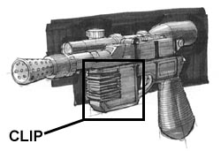
While most Republic and now Imperial soldiers favor the lighter and quicker-firing DH-17 model, many of the younger Imperial officers have taken to replacing their standard issue sidearms with DL-44's as defensive technologies continue to improve. Delivering shots nearly equivalent in power to that of a standard rifle, but draining the power pack after only twenty-five shots, a solider must have nerves of steel to be able to take the time to aim the weapon, but it's popularity continues to grow nonetheless.
This is the weapons Han Solo carries in the movies, and should be an exact replica. Though this is the weakest weapon in the game, it should not appear to be so (i.e. don't make it look dinky in the player's hand). For look details, consult the pic above or other reference material showing this weapon, it should be an exact depiction in the game.
Cost: 100 credits
Clip: Contains 100 charges (pic below details location)
Clip Cost: 10 credits
4.2 BlasTech E-11 Blaster Rifle:
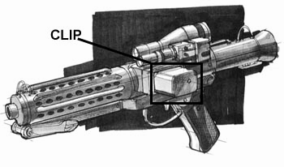
The standard weapon for troops of any type, and the weapon that has put the name BlasTech on the map. Light, powerful, and long-ranged, with it's 100-shot power pack and quick firing rate, the E-11 is dangerous even in the hands of an uskilled opponent.
You see this all the time in the movies, carried by Stormtroopers. Again, an accurate representation in the game is critcal, so consult plenty of reference material for both the modeling and skinning.
Cost: 200-250 credits
Clip: Contains 100 charges (pic below details location)
Clip Cost: 10 credits
4.3 BlasTech T-21 Light Repeating Blaster Rifle:
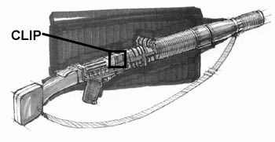
The most deadly weapon in the BlasTech line, the T-21 can easily punch through most armor, and still have enough energy left to cause fatal damage to any organic material underneath. Imperial Stormtrooper squads will occasionally equip a solider with one of these weapons, allowing him to pick off enemies while the rest of the squad members offer cover fire. A soldier carrying this weapon into battle must have the patience to time their shot correctly, for the extreme amount of heat generated by firing the T-21 limits it's rate to one shot per second.
This is seen a couple of times in the movies, carried by Stormtroopers. Though the fire rate is low, this is a very powerful weapon, and should be a one-shot kill against most lesser enemies. Once again, since this is an established weapon, we want to reproduce it exactly in the game.
Cost: 450 credits
Clip: Contains 100 charges (pic below details location)
Clip Cost: 10 credits
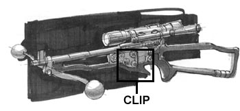
Developed by the Wookie people, these weapons have been dismissed by most other races, due to the incredible strength required cock the bowcaster, and the fact that damage inflicted was not much greater then that of a standard blaster rifle. Some however, took interest in the fact that the bowcaster fired a physical projecticle along with a blaster bolt, and began to do a little experimentation and mofication to this ancient weapon. The end result was a powerful rifle that was able to not only cause siginicant damage to an opponet, but also become an excellent solution to the rapidly-spreading personal energy shields. Since the bolt fired by the bowcaster is both projectile and energy, it causes damage to the target by punching the projectile though the shield while wearing the shield's strength down with the bolt's energy.
The last of our "straight-from the movies" weapons, construction is the same as all others.
Cost: 400 credits
Clip: Contains 6 bolts (pic below details location)
Clip Cost: 20 credits
4.5 Kelvarek Consolidated Arms Wrist Rocket:
Originally developed by a covert operations team on Malkeri, this small, wrist-mounted rocket launcher provided a quick and easy way to take out the security droids so often used on that planet, due to the fact that the droid's technology typically did not register the wrist rocket as a weapon until it was too late. Others saw it's usefullness as an assasination tool, or just a back-up weapon for soliders who want that "extra security". It's bulky nature does interfere with aiming other weapons, so the wrist rocket is typically taken off when not in use. It loads quickly however, and with all of it's small rockets stored in the weapon itself, it can be dropped in a soldier's pocket, then quickly slipped over the wrist when needed, instantly providing the user with incredibly damaging short-range potential.
The last of our "straight-from the movies" weapons, construction is the same as all others.
Cost: 500 credits
Clip: Contains 6 missiles (stored in the bottom of the weapon)
Clip Cost: 40 credits
4.6 Merr-Sonn PLX-2M Missile Tube:
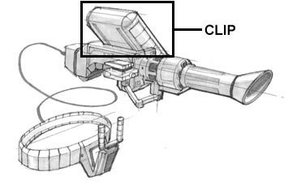
This shoulder mounted behemoth fires standard concussion missiles, and is capable of taking out most small to mid-sized vehicles, in addition to it's obviously disasterous anti-personnel capablilities. Housing small repulsorlifts to cut down on recoil, and a sophisticated targeting system to aid in firing accuracy, the PLX-2M has become immensely popular in both surface-based military actions, and has also been in high demand by smugglers and bounty hunters wishing to get that added edge.
We want to be careful of the hands here, they shouldn't look wimpy up against the rocket, it takes some muscle to hold that thing up! On the reloading animations, I don't think we need to show the actual rocket being loaded, just move it off to the side and play a solid-sounding metal "chunk".
Cost: 900 credits
Clip: Contains 3 missiles (see pic above for location)
Clip Cost: 100 credits
4.7 Tenloss DXR-6 Disruptor Rifle:
One of the single most deadly weapons in existence, distruptors have been outlawed on almost all planets in the galaxy. The firing rate is incredibly slow, but the sheer damage potential has been enough of a trade-off for most smugglers, bounty hunters, or assassins who wish to carry these weapons. Firing a small, extremely powerful projectile, a disruptor blast will utterly disintegrate most targets on contact, and if it doesn't, then it will surely cause horrendous amounts of damage, or at least overload any energy shield the target is using.
This is as close as SWQ gets to having a "BFG". This isn't a room-clearer, however, it's more of a one-shot kill, which should give DM newbies chance in the more weapon-oriented levels (this will never be present in a level designed for lightsaber combat). If we can manage it, this weapon should have a special death effect, replacing the model with an exploding sprite fountain, for example. The projectile for this is also different then a standard-fare blaster bolt, instead it fires a blue/white almost ellipse shape (think the Doom2 plasma rifle's projectiles, but more oblong).
Cost: 2000 credits
Clip: Contains 3 charges (see pic above for location)
Clip Cost: 200 credits
4.8 Timms Emperor-5 Beam Tube:
While the last beam tube produced by Timms was an ancient form of what would become blaster technology, it's constant fire rate was accomplished through a unique series of "quickdrain" energy cells stored in a backpack worn by the user. Recently, several technicians of the Timms team, pressed for money, assembled and decided to seek out a new application of this old technology. Their work resulted in the creation of the Emperor-5 Beam Tube, a significantly updated version of the old technology. The basic design is the same, but the weapon is now extremely lethal, firing a constant beam that is able to quickly cut through any armor or energy shields the target might be carrying. Against organic material or unshielded electronics it is nearly as lethal as a lightsaber.
Think the lighting gun from Quake, but firing a continuous laser beam instead of a lightning bolt. If it can be done, when the beam comes in contact with the lightsaber, rather then eliminating it, we could bounce it off at an angle, so that the beam continues in a different direction.
Cost: 1500 credits
Clip: Powered by a 200-cell energy backpack.
Clip Cost: 200 credits
The standard name in sniper rifles, Xerrol's latest offering is probably it's best to date, combining the quickest-possible fire rate for so powerful a weapon with an extremely accurate aiming system, and the ability to fire a condensed blaster bolt that is able to punch through any type of armor. While normally used only by surfaced-based special forces units or assassins, it has been rumored that the Empire is now forming a special unit of elite snipers to protect it's more valuable data, and track down the most hated enemies of the Empire...
This weapon also requires a scope, which should be freely zoomable if at all possible.
Cost: 750 credits
Clip: Contains 5 charges (directly in front of clip -- see model)
Clip Cost: 75 credits
An explosive device of incredible power, these extremely expensive and deadly devices are closely regulated by the Empire, but in some areas still available for civilian purchase. Powered by a baradium core activated either by a dead-man's switch or a timer, a typical class-c detonator will utterly annihilate anything within it's five-meter blast radius. No type of personal shield, armor, or vehicle can stand up to the blast, and as veteran soldiers have often said, the only defense against a TD is to get out of it's way before it goes off.
From my understanding of how this weapon operates, the blast radius' damage should be equal at its core and its edge. However, the radius should be extended just slightly beyond this, with a significantly lesser damage value, to signify a little shock damage from the explosion.
Cost: 500 credits
Clip: N/A
The ancient and trusted weapon of a Jedi Knight. The closed energy loop blade that the weapon produces is able to repel blaster bolts and slice through any material. No armor or shield is able to withstand a lightsaber blade, and as such, even an untrained Jedi is an incredibly dangerous opponent. The weapon does however, require either the guiding hand of the Force or an intense concentration to use effectively in battle, for the massless blade and the lack of any safety features whatsoever make a lightsaber extremely deadly to wield, for even a second of carelessness can result in one's death or the loss of a limb.
See Lightsaber Combat (6.0) for more information.
Cost: N/A
Clip: N/A
SWQ does have a small inventory system, with a use much like that of Quake2's default system.
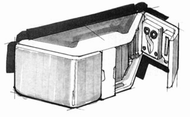
A standard field medical kit. While no match for the full healing process of a bacta tank, this kit is fairly complete, allowing a soldier knowledgeable in it's use to treat almost any injury.
The medkits the player picks up or purchases are stored in inventory until used. Each pack contains enough materials to treat 25 points of damage, at a rate of 5 points per second. During this time however, the player cannot fire their weapon or use a Force power. If either of these occurs, the healing process will stop, and not continue until the player activates the pack again (note that the pack will dynamically record the amount of health points it has left, so the player can use it multiple times, until it runs out).
Cost: 50 credits
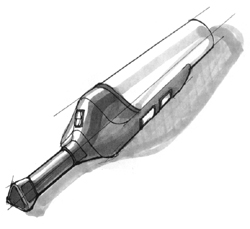
A standard glowlamp. Runs off a nearly inexhaustable power source to provide low levels of light.
Stored in inventory. Use1=on, Use2=off.
Cost: 25 credits
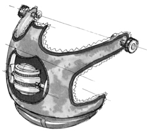
Developed by the Mon Calamari, this living organism will actually allow non-marine species to breathe normally underwater. It is still in the experiemental stage however, and at this point the organism seems to have an intense rejection to any species other then Mon Calamari, so much so that it dies after short exposure. However, it is still in demand, for even in it's unperfected state it is extremely valuable to those needing to travel long distances underwater.
When activated, allows the player to breathe underwater for an additional 20 seconds. Primarily for use in the Mon Calamari level and any special multiplayer level developed later.
Cost: 200 credits
The crystal which is the true source of a lightsaber's blade. Requiring extreme care to be cut "just so", only those with great patience and skill should attempt to create one of these unique crystals. Even the slightest flaw could result in a lightsaber that explodes upon activation.
This is purchasable from the Jedi in the Jedi Order Building on Thalkos. Dropped into the player's inventory, this is a one-use item, which activates the standard multiplayer menu and allows the player to change the color of their saber in the single-player portion of the game.
Cost: 700 credits
The lightsaber system is obviously one of the most important parts of the TC, and it is also a point where the TC can really shine in the eyes of the public. There has never been a decently good lightsaber in any first-person action game to date, even Jedi Knight fell far short here. As such, we want to devote plenty of testing time to the saber system, and be sure that it is both intuitive and interesting to use, all the while imparting the "feel" of using a lightsaber onto the player.
[RK's note: for attack/block descriptions and accompanying images, see Grey Knight's excellent lightsaber doc]
During an intense action game such as Quake 2, a player doesn't want to be moving their hands all over the keyboard during play, as such delays translate into death being a common (and annoying) result. SWQ makes a wide variety of attacks and blocks available to the player, and these need to be executed very quickly during a lightsaber duel, so the delay between switching from normal attack/movement to the lightsaber system needs to be as small as possible. For that reason, SWQ uses the player's existing movement setup, switching between the "normal" movement mode and the "duel" mode with one keypress. In the "duel" mode, the player's movement is restricted, to prevent accidental sidestepping, etc. while executing the saber attacks/blocks using the movement keys. The key bindings are as follows:
|
Movement |
+Crouch |
|
|
(none) |
Chop |
?Block Mid |
|
Forward |
Thrust |
Block High |
|
Back |
Uppercut (Right/Left) |
Block Low |
|
Sidestep |
Swing (Right/Left) |
Slice (Right/Left) |
To clarify this, here is an example multiplayer game situation: Player 1 leaps into the middle of a completely open area (a "dying ground"), and spots Player 2 wielding a lightsaber. Running up to Player 2, Player 1 switches from his stormtrooper rifle to a lightsaber, then switches into "duel" mode and begins to attack Player 2. Player 2 swings around and moves to block Player 1's second attack, then parries with an attack of his own. The combat continues, both Players spotting the attacking their opponent is attempting to land and responding with the appropriate block until someone finally makes a mistake and one of the other players lands a lethal blow. In this case, however, Player 2 becomes a bit inventive. Very low on health and knowing he's soon to die anyway, Player 2 risks disengaging from "duel" mode and steps back to Force Jump over Player 1's head. While still in the air, he spins around and switches back to "duel mode", and slices into Player 1's unprotected back, taking advantage of the other's confusion. Not the most honorable victory, but Player 2 lives still for at least another few seconds.
There are two modes to blocking attacks from other saber-wielding opponents (i.e. Dark Jedi and other players). One is an auto-block system similar to Jedi Knight's, and the other is a simplified manual system. When no other movement or swing is in progress, the system will automatically block all incoming attacks.
The player also has the option of manually blocking an attack. Manual block commands are limited to upper and lower, the system will choose the correct left/right command itself. If a manual block is used, it is automatically followed up by a parry, which occurs immediately after the block's execution is complete (thus giving the player a time bonus on this attack). Block-to-parry combinations are as follows:
[RK's note: more than one entry indicates that the counter-attack is a random selection between all entries.]
|
Block up to Left |
Slice Right, Swing Right, Uppercut Right |
|
Block up to Right |
Slice Left, Swing Left, Uppercut Left |
|
Block Left |
Swing Right, Slice Right, Uppercut Right |
|
Block Right |
Swing Left, Slice Left, Uppercut Left |
|
Block Low Left |
Thrust |
|
Block Low Right |
Thrust |
The animations for the lightsaber system are as follows:
[RK's note: For your convenience, here are the descriptions of the attacks/blocks provided by Grey Knight (see his doc for more info), with additional notes by myself]
1) Idle: Very slight movement of the lightsaber (mostly vertically) due to breathing, dipping the tip just noticeably down and back up, etc. Again, these should not be dramatic, merely slight motions that one would expect, and gives a realistic impression that the weapons is not being held absolutely still (which is of course impossible).
2) Salute:
Lightsaber is off. Hold in both hands, right hand above left, and bring handle up vertical to the face as though you were going to kiss it. You see this from Obi-Wan Kenobi before Vader finishes him off in ANH.
3) Ready Position - "Hasso "
This was Vader's favorite ready stance and appears to be so for the younger Kenobi and Jinn in APM images released to date. There are at least 5 alternative ready stances, but this one seems most dynamic and has real fighting benefits. Many serious martial artists use the same stance. It's not as "classic" as the Center Ready Position, but is considered more powerful as most other ready stances block your view of your opponent's feet.
Left foot is forward on centerline of the body with knee bent, right foot is back and slightly bent with feet flat on ground and heels about 3 foot lengths apart. Weight is balanced between both feet, hips are rotated to face forward. Lightsaber is held at shoulder level to the right side of your head just behind your ear with blade vertical, tilted slightly backward and slightly to the right. Shoulders are rotated slightly to your right and upper arms are horizontal.
4) Block Up Left
Rotate hips to left and swing hands across body to place handle just below your face and slightly forward. Tip of lightsaber is almost fixed in space. Rotate hands, again with tip almost stationary, until handle is above head level with blade almost horizontal above your head. This will result in your shoulders dropping and both knees bending.
Note: Blade should not be horizontal, but sloping with tip higher than handle. Your lever action is greatest closer to the handle so you need to keep the tip up to allow you enough power to deflect the blow.
Return to Ready Position through Center Ready Position.
5) Block Up Right
Similar to previous move but the block goes to your right. This time your hips rotate to the right as your hands move to just above head height to the right of your body. The blade is again almost horizontal with the tip slightly elevated.
Return to Ready Position
6) Block Left
Drop hands across your body to your left side at waist level rotating your hips strongly to the left just as you contact your opponent's blade. Blade is almost vertical with tip forward and handle slightly further out to your side.
Note: From the front the blade should just be to one side of your body.
Return to Ready Position through Block Right.
7) Block Right
Swing hands across your body towards the left side then drop your hands to your right side at waist level. Rotate your hips strongly to the right just as you contact your opponent's blade. Blade is almost vertical with tip forward and handle slightly further out to your side.
Note: From the front the blade should just be to one side of your body.
Return to Ready Position.
8) Block Low Left
Pull left foot back parallel to your right foot. Drop hands and swing blade out and down across your body to your left side at chest level whipping the blade and rotating your hips strongly to the left just as you contact your opponent's blade. Blade is almost vertical with tip forward and slightly further out to your side.
Return to Ready Position.
9) Block Low Right
Pull left foot back parallel to your right foot. Swing hands across your body towards the left side then across your body to your right side at chest level whipping the blade and rotating your hips strongly to the right just as you contact your opponent's blade. Blade is almost vertical with tip forward and slightly further out to your side.
Return to Ready Position.
[RK's note: Each of the blocks should be continuous -- as long as the player holds down the key, the block remains "active" (held out). This will both help with the problem of lag, and avoid any possible error on the part of the player of just slightly mis-timing a block (i.e. block moves out returns to ready position, but it occured too fast and the opponents strike hit home). However, certain blocks are only good against certain attacks, and the player is vulnerable to others, so they cannot simply keep a block permanently active and expect to be safe.]
[RK's note: Each of these blocks should also have a "strike" frame, which is displayed when another saber strikes the player's. This frame, which shows a slight recoil as if two real swords were colliding, along with the audio "clash", will clue the player in on just when the collision of the blades have occurred, and when they can release the block and try an attack.]
10) Chop - "Shin Choko-Giri"
Left elbow lifts over head bringing upper arm almost vertical and bringing both hands to centerline of body behind head with blade horizontal. At the same time slide your left foot to your left and bring your right foot up then circle out to about 3 foot lengths apart, square to your opponent, arching you back and raising your power as you move. Swing down bending your knees and lowering your center of gravity to add power as you strike your opponent. Swing through until your elbows act as a brake on your stomach.
Note: the left hand is doing all the work here, your right hand is merely steering all the force from your left. This move is rarely used in combat, except for dispatching an injured opponent, as it leaves you wide open to attack.
Return to Ready Position by moving your left foot first then sliding your right foot back into position while holding you lightsaber in Center Ready Position.
11) Slice Left - "Kesa-Giri"
Drop tip back and down, push hands to upper right of head and lift left elbow above your head with blade almost horizontal above your head. Step forward with right foot placing it on centerline, heels about 3 foot lengths apart. Swing lightsaber forward and downward at 45 degrees slicing across your opponent's body from shoulder to hip. Arms are fully extended and blade is almost horizontal at point of contact. Swing through and allow your elbows to act as brakes by hitting your body (this stops you hitting the ground or yourself.)
Return to Ready Position through Block Right.
12) Slice Right - "Kesa-Giri"
Drop tip back and down swinging left arm up and across your face bringing your hands to the left side of your head with blade almost horizontal above your head. Bring right foot up almost touching your left foot then step forward with your left foot, heels about 3 foot lengths apart. Swing lightsaber forward and downward at 45 degrees slicing across your opponent's body from shoulder to hip. Arms are fully extended and blade is almost horizontal at point of contact. Swing through and allow your elbows to act as brakes by hitting your body.
Return to Ready Position.
13) Swing Left - "Yoko-Giri"
Rotate hips and shoulders to your right rotating your right foot, on its heel, out to your right side, perpendicular to your centerline. Swing tip back and down dropping hands down to your chest level with blade horizontal behind you. Shift most of your weight onto your right foot and swing your left foot to your rear so that both feet are about 3 foot lengths apart and square to your opponent. Swing the blade horizontally across your body like a baseball bat, leading with your left elbow as you slide your left foot to the left. As you make contact with your opponent's body shift your weight to your left foot and rotate your hips strongly to the left. Follow through but avoid going beyond your left shoulder. The right foot can pivot on the ball, but avoid lifting the heel - it means you've gone too far.
Return to Ready Position through Block Right.
14) Swing Right
Pull your left foot back in towards your right then slide it out to your left until it is about 3 foot lengths apart from your right foot. Rotate hips and shoulders to your left while dropping your lightsaber tip back and down swinging left arm up and across your face and your hands down to your chest level with blade horizontal behind you. Rotate hips and shoulders to your left rotating your left foot, on its heel, out to your left side, perpendicular to your centerline. Shift most of your weight onto your left foot and swing the blade horizontally across your body like a baseball bat, leading with your left hand. As you make contact with your opponent's body shift your weight to your right foot and rotate your hips strongly to the right. Follow through but avoid going beyond your right shoulder. The left foot can pivot on the ball, but avoid lifting the heel - it means you've gone too far.
Return to Ready Position.
15) Upper Cut Left - "Kiri - Age"
Rotate hips and shoulders to your right rotating your right foot, on its heel, out to your right side, perpendicular to your centerline. Swing tip back and down dropping hands down to your side to point tip at ground, elbows almost locked a little like a golf swing. As the tip comes forward slide your left foot forward and move hips forward, rotating left and leaning into the blow as the blade swings up and across your opponent. Arms are fully extended at point of contact and hips rotate strongly to the left as you cut through your opponent's body from hip to shoulder and follow through. Blade ends up almost vertical with tip out to the left and arms fully extended.
Return to Ready Position through Block Right.
16) Upper Cut Right - "Kiri - Age"
Pull left foot back beside your right foot, drop tip back and down swinging left arm up and across your face bringing your hands to the left side of your head with blade almost horizontal above your head. Rotate hips and shoulders to your left rotating your left foot, on its heel, out to your left side, perpendicular to your centerline. Swing tip around and down dropping hands down to your side to point tip at ground, elbows almost locked a little like a golf swing. As the tip comes forward slide your right foot forward and move hips forward, rotating right and leaning into the blow as the blade swings up and across your opponent. Arms are fully extended at point of contact and hips rotate strongly to the right as you cut through your opponent's body from hip to shoulder and follow through. Blade ends up almost vertical with tip out to the right and arms fully extended.
Return to Ready Position.
17) Thrust - "tsuki"
Move your hands to the Center Ready Position. and thrust the blade into your opponent's chest bending the leading knee to drop your center of gravity. Lean forward into the thrust.
Note: This move is rarely used against a skilled opponent, as it is very easy to block.
Return to Ready Position.
[RK's note: Each of the attacks should look as though the player is putting some (physical) force behind it, though the blade is massless, it apparently does meet some resistance through the course of its swing.]
18) Center Ready Position - "Chudan "
This was the older Kenobi's preferred ready position. Not surprising really, as it requires the least movement to react, especially with a blade that can cut in any direction. In other words, it's better for an older Jedi because it protects him by allowing a longer reaction time.
Left foot forward, right back, weight balanced between feet. Hips and shoulders are square to your opponent. The lightsaber is held in front of you, both hands centered on your body with your left hand is 4 inches in front of your navel. Both elbows are slightly bent. The tip of your lightsaber is at your opponent's throat.
[RK's note: Through GK's descriptions here you can see SWQ's blend of art and action. By using the katana as a reference, we have plenty of background to create realistic movements, and by keeping the attacks available to the player limited by the movement keys, we assure that the action requires just enough thought to be intense, but not so much that it results in frustration for the player.]
6.3 Additional Considerations:
A couple additional elements of the lightsaber system:
The representation of the lightsaber's ability to block energy-based projectiles in SWQ is similar to that in Jedi Knight. This occurs automatically, regardless of whether the player is in "normal" or "duel" mode. The exception is that if the player is in "duel" mode and performing an attack or even a block, the automatic projecticle blocking is overriden by the player's manual action. Projecticle blocking occurs in the following manner: once the projectile comes within the range of the player's saber, it is deflected away at an angle, and a random block is displayed visually (to give a good visual effect). Since the use of a lightsaber to exactly block the path of a projectile requires a little use of the force, 1 point is drained from the players Force pool for every projecticle blocked.
[RK's note: all energy-based projectiles can be blocked of course, but I'm undecided as yet as to whether or not missiles should be as well. Technically, a lightsaber should slice through the warhead and electrical components, effectively disabling the missile, but perhaps contact with the lightsaber causes the missile to detonate before the damage can occur to that degree?]
Finally, injuries effect the player's ability to block ("the more that hit you, the more that will"). If a player is experiencing "pain", any blocks that would have occurred are ignored. This will prevent a player from being able to unrealistically survive in the middle of huge firefights.
The lightsaber does emit a faint glow of light, which is represented in the game as coming from the player. Unfortunately, we cannot specify light color based on the skin of the saber, but a generic "white" light will be acceptable. Note that this is not extremely bright, but in the middle of a dark room should definitely be enough to light the player's features and reveal his location.
A Force-controlled lightsaber in flight can be one of the most deadly of projectiles. However, it can very easily be blocked by the normal projectile blocking system, and it does reveal its location with the distinctive saber "hum". All of the Dark Jedi should block such an attack as easily as they would a normal projectile.
One feature players demand for multiplayer games is the ability to select the color of their saber. Since we cannot modify the Q2 menu system, this will have to be done through an in-game menu. Upon first entering a server, the player is a "spectator" (not in play) and in addition to being able to review the saber settings, can select the color of their lightsaber through simple menu system.
The Force is just as essential a part of any Star Wars game as the lightsaber, and SWQ without a doubt takes its implementation of the Force further then any other game to date. It will require a lot of work and some very extensive testing to get righ, but the final result will be an almost RPG-level skill system that is both fun and fulfilling to use.
[RK's note: This is already done, but I've re-written most of it just out of clarification to myself]
The central focus of the Force system is the powers. Basically, all values are obtained from the individual powers. The hierarchy works something like this (listed from small to large):
1) Individual powers gain experience points based on use
2) Powers are classified into sub-groups, and each sub-group has a value, which is the average of the powers contained in that sub-group.
3) Sub-groups are further generalized as either Light or Dark (which the exception of Neutral). Light and Neutral power's value gain positive experience points, while Dark powers lose experience points negatively as they "gain" experience.
4a) A top-level value is calculated from all the powers averaged together (an absolute value). This determines the player's title. This value multiplied by 2 determines the player's Force Pool, the source of "energy" or "mana" for the powers.
4b) A Light/Dark value is determined based on the sub-group averages, which are all added together to gain this value. This marks the player as either a Light or Dark Jedi based on whether the value is positive or negative.
Now, we'll explain things in a little more detail. As has been noted, the player has a "Force pool" which acts as a limiting factor on how much use a player can get from their powers at a specific time. Every power has a cost value assigned to it, and that cost is detracted from the Force pool at every use. Some powers, which are used continuously, have per-second cost values. The Force pool regenerates at a rate of two points per second. The value for the Force pool is the top-level value doubled. However, this value cannot drop below 100. So if the player's doubled top-level value does not equal 100, then 100 is assigned to the Force pool. However, as soon as the doubled top-level value exceeds 100, then that value is assigned to the Force pool. This gives the player the sense that they are growing in their mastery of the Force without frustrating them by ever having too low of a Force pool.
The top-level value's primary use, aside from determining the Force pool's amount, is to give the player a title. The table below shows the titles applied to the player based on the top-level value:
0-20: Apprentice
21-40: Adept
41-50: Jedi
51-90: Jedi Knight
91-100: Jedi Master
This "title" is attached to the player's name (i.e. "Malacoda, Jedi"). This is useful in the single-player game in determining just where the player's Force pool stands, and especially useful in multiplayer games to gauge how skilled another player is in the use of the Force.
The Light/Dark value functions in much the same way. If the result of the addition of the sub-group averages is greater than or equal to zero, the player's title remains as it is. If the result id less then zero, a "Dark" is added to the front of the title (i.e. "Malacoda, Dark Jedi"). This also gives players in multiplayer games a better idea of what kind of powers their opponents wield, and assists in clarification of who is who in any sort of Light vs. Dark conflicts. The Light/Dark value also takes a role in the "balance" effect, which is detailed below.
One other special note here: powers in the Neutral sub-group do not necessarily belong to one side or the other, so they do not need to be calculated into the Light/Dark value.
The inidividual powers are the real meat of the system. Each power of course has a specific function assigned to it that occurs in the game world (i.e chokes and opponent, heals the player, etc.), but that function is not necessarily the same throughout the game. Every power has experience points assigned to it, in representation of the percentage of experienced that it is possible to gain with that power (from 0-100 points, in other words). Starting out with all of the powers at zero, the player gains experience points in the game through one of two ways: 1) given automatically during the course of a cut-scene which shows the player "training" (the Academy and Thalkos), or 2) acquired by the player, through using the powers repeatedly on their own. This "self-education" is primarily how the player will advance in the Force system. However, this isn't easy to do. As the experience points for a power increase, it becomes exponentially harder to gain more experience points. This difficulty is represented in the game by the number of times the player has to use the power to gain another experience point. To clarify: at low ends of the experience point scale, it takes very few uses of the power to gain another experience points. At very high ends of the scale, however, it could take literally hundreds of uses to gain one of those last few points.
The direct gain of experience points through cut-scene or use is not the only way that the point total for a power is increased, though. As has been noted above, the Force power are organized into "sub-groups". These sub-groups classify powers with similar characteristics (i.e. Lightning and Inferno might both be grouped under Nature), and it is realistic to assume that as skill in one of power increases, skill in other powers in the same sub-group will increase. This is modeled in the game as follows: for every 5 points gained in a power, 1 point is added to every other power in that sub-group that has an experience point total under 50. Putting this limit in prevents players from gaining a high amount of experience points in one power, then using a weaker power to quickly gain those last few points.
[RK's note: thus you can see how the powers control the rest of the sytem -- the player gains experience points in more powers, the averages for those power's sub-groups increases, and the top-level and Light/Dark values are adjusted accordingly]
The "learning" does not stop there, though. We don't want to give the player access to all of the power right away, especially not some of the more potent, higher-level powers. To prevent the player from using these too early, each power has a "pre-requisite" value. This pre-req value is compared to the sub-group value, and if the sub-group value is lower, then the power is not displayed on the power selection menu, or available for use.
[RK's note: this does not mean the power is "off", merely that the player is unable to use it. It still maintains its (very low) experience value, which is the Force system takes into account, and it still receives the sub-group bonus as all the other powers do. The pre-req values are calculated based on the fact that the unavailable power's low experience points are influencing the system. This prevents the averages from "jumping around", and to the player merely seems to give him access to more powers as their skill with the Force increases. The pre-req values are fairly low so that this illusion is maintained -- the player won't ever have to be scratching his head wondering why his overall skill level is so low when he has almost mastered the powers currently available to him in a sub-group.]
Two other major items of note left. First, the effect of "balance" on the system. As it is true that the Light and Dark sides of the Force are distinctly different, it would not make sense to allow a Light side player access to higher-level Dark side powers. For that reason, the following limitation is placed in the system: based on "side" the player is on (Light/Dark value is either positive or negative), for every experience point gained on the side the player is using, an experience point is lost on the opposite side. This power atrophy targets the power with the greatest amount of experience points on the "opposite" side. If there is more than one power with the same amount of experience points, the atrophy just picks the highest power in alphabetical order (based on the name). The power pre-req values will do the rest to eliminate powers from the player's inventory as the opposite system continues to de-generate. There is one stipulation, however. The power with the lowest pre-req value on the "opposite" side will always be available to the player, even if its experience point amount drops to zero. This will allow players to be "tempted" back to the other side, if they so choose.
The second item is that of power "levels". Rather then simply having the gain of experience points influence the system, it also has a visual/physical effect in the game world. Each power's function is broken down into "levels", which each level becoming active based on the experience points the power has gained. For example: a player just starts to use Force pull for the first time. At level 1, the targeted object does nothing more then jiggle around a little. As the player continues to practice and reaches level 2, the object now makes short hops toward the player. As the player gains further experience and gains level three, the object finally flys straight and smooth into the player's hand.
Finally, the communication with the player about their current experience level: as has been noted, titles are attached to the player's name to give a general feel for the experience point standing, but for those players who want a more involved learning experience, the messages below are displayed when the described actions occur:
"You have increased your skill with [power x]."
>> occurs when an experience point is gained
"You have gained a new level of mastery over [power x]!"
>> displayed when a new power "level" is reached
"You have discovered the use of [power x]!"
>> when a new power's pre-req value is met and becomes available.
Each of the above should play a "bright-sounding" tone along with the message, to bring the player's attention to it. Each of the below should play an "electronic drain" sound to do the same.
"You have lost some of your ability with [power x]."
>> occurs when an experience point is lost due to atrophy
"You level of mastery over [power x] has decreased."
>> displayed when a power degenerates to a previous level due to atrophy
"You have lost the use of [power x]."
>> when a power is rendered inactive due to atrophy
Power interaction is a very straightforward procedure. To select a power, the player simply brings up the Force menu, which functions in exactly the same way as the weapon-selection menu. The player has a generic "activate power" key, which activates the power that has been chosen in the power-selection menu. For single-use powers, this simply uses the power. For continuous powers, though, the key must be held down, and the power will continue to be used as long as the key is held down or until the Force pool runs out.
In multiplayer games, and battles with the Dark Jedi in the single-player games, situations will arise where it will be critical to know what power an opponent is using against you. For that reason, any power being used against the player has its icon displayed in the lower left corner of the HUD. On the lower right side of the HUD is a running total of what the player's Force pool contains, and an icon showing the currently-selected power.
One last item: using the Force requires extreme concentration, a gathering of inner calm, or a focusing of hate. If the player's attention is diverted away from this, their concentration can slip and the power's use can fail. In the game, if the player is injured, any Force power in use is stopped.
The Neutral powers are in one sub-group all their own.
[RK's note: again, most of the Force powers are already done, though for reference purposes I intended to update the numbers here as we change them.]
As the title suggests, this power pushes the targeted item away from the player.
sub-group: Neutral
power type: continuous
level 1 (0-25): targeted item jitters about on the ground, but does not move
level 2 (26-50): targeted item makes short hops away from the player's location
level 3 (51-100): targeted item flys away from the player
cost value: 5 points/second
pre-req value: 0
As the title suggests, this power pulls items toward.
sub-group: Neutral
power type: continuous
level 1 (0-25): targeted item jitters about on the ground, but does not move
level 2 (26-50): targeted item makes short hops to the player's location
level 3 (51-100): targeted item flys straight and smooth to the player's location
cost value: 5 points/second
pre-req value: 0
This power augments the player's muscles to allow him to jump much higher.
sub-group: Neutral
power type: single-use
level 1 (0-20): player jumps at 1.5x a normal jump
level 2 (21-40): player jumps at 2x a normal jump
level 3 (41-60): player jumps at 2.5x a normal jump
level 4 (61-100): player jumps at 3x a normal jump
cost value: 10 points
pre-req value: 8
Sends the player's lightsaber spinning end-over-end. The player must have their lightsaber active for this to work (if not, and error message: "you don't have your lightsaber out!") This hides the player's v_ model, and removes the visible weapon from the player model as well. As long as the player holds the key down, the lightsaber will remain out, unless one of the following conditions happens: 1) the lightsaber strikes something, 2) the lightsaber is blocked, 3) the player dies. In all except #3, it will be as if the player had let go of the key, which causes the light saber to return to the player. While the lightsaber is not in the player's possestion (being controlled by the Force), the player cannot move except to turn and duck. During the time the lightsaber is out, the "stretched hand" frame is displayed on the player model. If the player dies, the lightsaber shuts off and drops to the ground wherever it is currently at.
sub-group: Neutral
power type: continuous
level 1 (0-50): fly straight out from the direction it originated
level 2 (50-100): swings about to follow where the player targets
cost value: 10 points/second
pre-req value: 15
Stops the casting of any power that is currently targeting the player. To the opponent who was casting the power, it is as if they had been interrupted through pain.
sub-group: Neutral
power type: single-use
level 1 (0-20): negates an Apprentice's powers
level 2 (21-40): negates an Adept's powers
level 3 (41-50): negates a Jedi's powers
level 4 (51-90): negates a Jedi Knight's powers
level 5 (91-100): negates a Jedi Master's powers
cost value: 20 points
pre-req value: 20
Lifts the player up off of the ground, and lets them move around as if in fligh (think "noclip"). If the player's Force pool runs out or the power is stopped, the player drops to the ground.
sub-group: Neutral
power type: continuous
level 1 (0-25): jiggles the player's view and player model a bit
level 2 (26-50): raises the player a fixed amount off of the ground
level 3 (51-100): allows the player to effectively fly
cost value: 10 points/second
pre-req value: 35
The powers used by the Light Side Jedi.
Heals the player during the time the key is held down.
sub-group: Spirit
power type: continuous
level 1 (0-25): heals at a rate of 5hp/sec.
level 2 (26-50): heals at a rate of 10hp/sec.
level 3 (51-100): heals at a rate of 20hp/sec.
cost value: 5 points/second
pre-req value: 0
Uses the Force to create a shield around the player capable of stopping any weapon except a lightsaber. However, while energy-based weapons will splash harmlessly against the shield, a Jedi is not completely protected from explosive damage (though there is a noticeable reduction on the damage dealt).
[RK's note: seeing an effect here would be really great (i.e. particles spawned, a shell flashing around the player when something is blocked, etc.)]
sub-group: Energy
power type: continuous
level 1 (0-35): halves damage from energy weapons
level 2 (36-100): stops all damage from energy weapons, stops 1/4 explosive damage
cost value: 10 points/second
pre-req value: 8
"Binds" the target to the ground, stopping it from moving except for turning. It does not, however, interfere with the target's ability to fire weapons or use Force powers.
sub-group: Telekinesis
power type: continuous
[this power has only one level of mastery]
cost value: 20 points/second
pre-req value: 15
Causes several gust of wind to explode outward from the player, pushing any moveable entities back a considerable distance, and altering the course of any incoming projectiles (rockets, thermal detonators, bowcaster quarrels, and thrown lightsabers)
sub-group: Telekinesis
power type: single-use
level 1 (0-25): active radius is 2 player widths
level 2 (26-50): active radius is 3 player widths (sound is more intense as well)
level 3 (51-100): active radius is 4 player widths (sound is more intense as well)
cost value: 25 points
pre-req value: 30
This separates the player from his body (creates a different camera). In this mode, the player can move very quickly, free of gravity. This allows the player to view any portion of the level unseen, and due to the increased sense of awareness, the player can see any other invisible Jedi. These benefits do come with an added cost, however. While in this state, the player leaves his body completely undefended.
sub-group: Spirit
power type: continuous
[this power has only one level of mastery]
cost value: 10 points/second
pre-req value: 45
This power uses the Force to bend the light around the player in such a way that he does not appear to be there. For this power to work, however, the player must remain very still. If he makes any movement, is hurt in any way, or performs any action whatsoever (use of the Force, fire a weapon, etc.), the effect is dispelled and the player is once again visible. As such, this power is mostly used only as a method of escape when death is the only other alternative.
sub-group: Energy
power type: single-use
level 1 (0-25): heals at a rate of 1hp/sec.
level 2 (26-50): heals at a rate of 2hp/sec.
level 3 (51-100): heals at a rate of 3hp/sec.
cost value: 55 points
pre-req value: 60
A very potent power, Reflect shifts the target of any continuous Force powers acting upon the player to their originators. For example, if a Dark Jedi is attacking a player with Lightning, and the player uses Reflect, the Dark Jedi will now be targeting himself with the Lightning.
sub-group: Energy
power type: single-use
level 1 (0-20): reflects an Apprentice's powers
level 2 (21-40): reflects an Adept's powers
level 3 (41-50): reflects a Jedi's powers
level 4 (51-90): reflects a Jedi Knight's powers
level 5 (91-100): reflects a Jedi Master's powers
cost value: 70 points
pre-req value: 65
The real weapon a Jedi has against Dark Side users, this extreme directing of the Light side of the Force at a target will completely cut it off from the Dark Side while it is maintained, denying the target access to any of its powers, and draining its Force pool at a rate of 10 points per second.
sub-group: Spirit
power type: single-use
level 1 (0-20): blocks a Dark Apprentice
level 2 (21-40): blocks a Dark Adept
level 3 (41-50): blocks a Dark Jedi
level 4 (51-90): blocks a Dark Jedi Knight
level 5 (91-100): blocks a Dark Jedi Master
cost value: 40 points/sec.
pre-req value: 80
The powers used by the Dark Jedi
Twisting the very air around a target's throat, this power slowly squeezes the life out of any living organism by denying it the air it needs to survive. While this power is in use, a v_lefthand is visible from the first-person perspective, showing a quivering hand struggling to clentch into a fist. As the target's health decreases, the fist will slowly close, until the target dies and the fist is completely closed. The same is visible on the player model.
sub-group: Telekinesis
power type: continuous
level 1 (0-25): causes 5 points of damage per second.
level 2 (26-50): causes 10 points of damage per second.
level 3 (51-100): causes 25 points of damage per second.
cost value: 5 points/second
pre-req value: 0
Commanding nature itself to bend to the player's will, this power creates lightning bolts which arc from the player's hand to his chosen target, damaging it just as if it had been touched by a real bolt descended from the heavens.
sub-group: Energy
power type: continuous
level 1 (0-33): creates one bolt (each bolt does 5 damage point/sec.)
level 2 (34-66): creates two bolts
level 3 (67-100): creates three bolts
cost value: 10 points/second
pre-req value: 10
Focusing and intensifying the hate the player feels for everything around him, he is able to open himself to temporarily open himself to the Dark Side at a much greater degree than normal (doubles the player's Force pool, the added pool points do not regenerate after use). However, this comes with a cost, subtracting 50 points from the players health as his body is ravaged by the barely contained energies...
sub-group: Spirit
power type: single-use
[this power has only one level of mastery]
cost value: 35 points
pre-req value: 20
A perverted form of the Light Side's Heal, this power suffuses the player's body with dark energies to restore him to optimum health. This does not last though: after ten second the player's health returns to the point it was originally at a rate of 2 health points per second.
sub-group: Spirit
power type: single-use
level 1 (0-25): heals at a rate of 1hp/sec.
level 2 (26-50): heals at a rate of 2hp/sec.
level 3 (51-100): heals at a rate of 3hp/sec.
cost value: 10 points/sec.
pre-req value: 30
Using a trick of the mind, this power causes a targeted Force user to drain twice as many Force points from his pool then he needs to normally. Those points, rather then simply being wasted, are added to the player's Force pool.
sub-group: Energy
power type: continuous
level 1 (0-20): works against a (Dark) Apprentice
level 2 (21-40): works against a (Dark) Adept
level 3 (41-50): works against a (Dark) Jedi
level 4 (51-90): works against a (Dark) Jedi Knight
level 5 (91-100): works against a (Dark) Jedi Master
cost value: 40 points
pre-req value: 45
Grabbing hold of a mass of air molecules and rubbing them together rapidly, the player is able to ignite a blaze around his chosen target, dealing significant amounts of damage. This blaze will follow the player about, continually doing damage until either the player enters water or activates a Light or Dark Heal.
sub-group: Telekinesis
power type: single-use
level 1 (0-33): does 5 points of damage/sec.
level 2 (34-66): does 10 points of damage/sec.
level 3 (67-100): does 15 points of damage/sec.
cost value: 75 points
pre-req value: 60
Similar to the power employed by Light Side users, Wall of Darkness floods another Jedi with the Dark Side, blocking them out from the Force, denying the target access to any of its powers, and draining its Force pool at a rate of 20 points per second.
sub-group: Spirit
power type: single-use
level 1 (0-20): blocks an Apprentice
level 2 (21-40): blocks an Adept
level 3 (41-50): blocks a Jedi
level 4 (51-90): blocks a Jedi Knight
level 5 (91-100): blocks a Jedi Master
cost value: 50 points/sec.
pre-req value: 80
8.0 Other Programming Concerns:
This section details the additional elements of the TC that are primarily programming-related, though most require some work by the various art departments as well.
[RK's note: this is already done, so I didn't update anything here]
As has been noted, SWQ has a distinct RPG feel to it, and one of the sources of this is the fact that the player often has to interact with NPCs in other ways then killing them. Specific NPCs will advance the plot through conversation, or just add to the atmosphere of the game.
SWQ's conversation will work like most that you've seen in RPGs. Upon activation, a dialog box displays, showing a "mug shot" and name of the NPC being spoken to off to the right, with the rest of the space being devoted to two panes. The top pane shows the actual text "spoken" by the NPC, while the bottom pane (which is significantly smaller then the top pane) shows the possible responses the player can give. Based on the player's selected response the top pane's text changes. Fairly straightforward, in other words.
Activation of the system is not automatic. The player needs to activate a specific command (i.e. npc_talk) in order to bring up the conversation dialog of the NPCs he is nearest to. This will require the movement of the player's hand from the movement keys, but the conversation system will only be activated in non-combat situations.
One last note of importance here: Our response script files need to be able to perform actions on other entities (i.e deposit an item in the player's inventory based on a response).
[RK's note: if we can do it, it would be great to be able to play a .wav file along with the text...we wouldn't want this to generate an error if the .wav cannot be found, however. The .wav's would be fairly large all combined, and we'd want that download to be optional.]
Not all items in SWQ are found lying around on the ground; some are only available by purchasing them through NPCs via the trade system. The way the system works is this: as with the conversation system, bystanders can be flagged as "shopkeepers". When designated as a shopkeeper, the bystander is linked to the trade system. If the player activates the talk command near one of these shopkeeper NPCs, the trade system interface pops up instead of the conversation dialog. The interface is broken up into four sections. At the top is a small pane which tracks the dialog of the NPCs. At the initial start of the trade interface, there is a welcome message here (i.e. "what can I do for you?", "hey, I've got some really hot deals for you", etc.), which can be specified right in the level editor via the entity -- this will allow us to have a little variety. This also keeps track of how much the player spent. Upon making purchase this area will state something to the effect of: "That'll be x credits for the y." and on the next line: "Thanks. Here's your merchandise."
At the lower right corner of the trade interface is a dynamic display of the player's amount of credits. The rest of the screen area is given over to the shopkeeper's inventory, which displays the item name and cost. As the player selects an item here, the item is dropped in the player's inventory, the cost is deducted from the player's credit total, and the confirmation message mentioned above is displayed. Exit of the trade interface is accomplished through the default use of the escape key.
The player's aquisition of credits occurs in one of two ways: 1) from other NPCs, or 2) from killed enemies. The first method occurs through the conversation system (8.1). Certain response scripts can trigger the dropping of x number of credits into the player's inventory. The second method is the much more common one. On the event of an enemies death, several credit models will be spawned to fall to the ground, which the player can run over to pick up. These credit entities have a random value assigned to them, between 1 and 25. As the player picks these up, the amount attached to the entity is added to that in the player's running credit total.
[RK's note: we need to have an option in the code for some enemies to not spawn credits upon death. Droids wouldn't be carrying credits around, for example]
The basic description of this system is that it is a special level_exit entity. The ship the player varies throughout the course of the game, but that ship is visible at several locations in the game. For that reason, a special player_ship entity is needed, which reads which ship the player currently has, and displays the correct model. When the player runs into this entity, the navigation system is brought up, and the player's choice determines which level is loaded next. Another version of this entity is needed however, which simply calls up the navigation system (no model of the player's ship is displayed), for those occasions where the player will already be in a vehicle but still needs to navigate between planets.
The navigation system is fairly simple: just a listing of the worlds available to the player for travel. The player's selection determines which level (or demo/cut-scene) is loaded next. This display has to be able to be modified however. At certain points in the game we will want to change one listing to point to a different map file, or add/remove a listing altogether.
In as sci-fi a universe as Star Wars, computers obviously play an important part. Currently in Quake2, the only method of interfacing with computer is to bump your chest into the keyboard and watch the keyboard retract as the computer does it's work. For SWQ, we want a little more realistic interaction then that. The console interface entity is place right in front of a representation of a computer in the level, and when the player enters the entity, an interactive menu is brought up, giving the player several choices. These choices correspond to actions on other entities in the map. For example, the player enters a console interface entity overlooking a hangar opening. Picking one choice, "display system status", would trigger a message entity that adds a little atmosphere to the game. Exiting and re-entering the interface entity would bring up the console menu again, and this time the player could choose "shut down magnetic field". This would cause klaxons to sound, and activate several push entities that would shove everything not bolted down to the center of the now unprotected hangar opening.
[RK's note: Coders, I want to talk a bit more on this issue...]
SWQ calls for the use of a few controllable vehicles, for use in both single and multiplayer sessions. When any of these are activated, standard movement and fire controls should be maintained, and of course the player model should be switched to the appropriate vehicle. The list of required vehicle systems are as follows:
-Speeder Bike/LandSpeeder
-X-Wing/TIE Fighter/Z-95
(-AT-ST Walker)
The last is optional, but would make an excellent addition to locations like the Ionus IV Defense Base. Now, to briefly describe the way each of these vehicles should operate:
The speeder bike/landspeeder system should be very simple, this isn't an X-Wing we're talking about after all. These vehicles float a set height above the ground, and that cannot be altered. They don't pitch at all except to conform the the terrain beneath them so that they are at the specified height. Rather then having a varying turning rate based on how much input is put in by the player, the turn rate for these vehicles is constant, and is adjusted simply through how long the turn is active (key held down, mouse held to the right). While the vehicle is turning, the model tilt slightly into the appropriate direction, to give the player a further visual cue of when they are in a turn and when they are going straight. These vehicle move directly sideways as well as turning, through the use of the sidestep key.
[RK's note: we've already done the fighter control system, so describing it here isn't needed.]
If the optional walker is put in, all it needs to be is a more limited, slower-moving player model. The only special considerations are these: 1) a cockpit v_model needs to be displayed when the player is in a first-person perspective, 2) the player's armor value needs to be increased to about 250, and 3) when moving, the player should hear the classic "walk" sound, and the player's view should jerk up in down in time with the movement, just as if the player was actually in the cockpit.
Every vehicle requires a v_cockpit model to be displayed from the first-person perspective, and a g_model to be used as a replacement for the player model as well as in the entity that the player "steps into" in order to activate the vehicle.
This section details the additional elements of the TC that are primarily programming-related, though most require some work by the various art departments as well.
[RK's note: the intro text will be changed]
Classic slanted-text Star Wars intro appears, displaying:
It is 20 years before the Rebel Alliance makes its fated attack against the Death Star. The Galactic Empire has only just completed it's rise to power, and the Emperor knows that if he is to maintain his position, he must rid the galaxy of the Jedi, a task he places upon his loyal lord Darth Vader.
At Vader's call a group of Dark Jedi assemble to aid in this quest, one of whom has discovered an ancient secret: the ability to pull the very life essence out of another Force user and add it to his own.
With the aid of the Dark Jedi, Vader and Emperor Palpantine set into motion a plan that will ensure the eradication of not only the Jedi, but ever other Force user for all time, beginning with those infesting the Imperial Navy. And so the Great Jedi Purge begins...
[RK's note: This is under revision, doesn't quite have the "cool factor" I'd like yet]
-> Camera pans down to a nondescript planet (re-use Ionus texture map here), then zooms in to the focus on the orbiting Star Destroyer, the ISD Dominance, and the shuttle approaching the ship. The camera continues to follow the ship through it's orbit until it comes around so that the system's second sun can be viewed, causing a lens fare transition to the deck of the ship, and the General walking down the corridor. Two other crew members pass from the opposite direction before he turns and enters one of the side doors, leading to the officer's lounge. Getting a drink from the food dispenser, he sits down at the table across from the ship's captain, the room's only other occupant and who is immersed in his data pad. The general picks up his own, asking "Shall we see what the Empire wants of us today?" before keying in his access code and reading his orders.
Captain: "Not much, thankfully. We're to stay in orbit and await some official who's to scan the crew. [waves a hand idly] Something about checking for the ability to use the Force, so that 'individuals possessing the said ability may be given their proper due in the Imperial Armed Services' [points to the general's data pad] Everything's in there. Looks like you've got an easy day. Just let the guy scan you, and you're done."
General: [urgently] "When will he be arriving?"
Captain: "He's already here. I just came from welcoming him on board and getting scanned myself. He's probably looking for you right now, his orders are to start with command level personnel and their immediate families, should their be any on board."
General: [rises] "You'll excuse me then, I should see that my son is available."
Captain: [nods]
-> The general exist the lounge at a walk, but as soon as the door closes, he throws the data pad down and begins running down the corridor. The camera cuts to the inside of the player character's quarters, with the player standing in front of a desk. The door opens and the general bursts into the room. The player turns around and the general manages to get out "Son, listen to me quickly-" before the mentioned official enters, carrying the Force affinity testing unit.
Official: "Ah." [to the player] "The captain told me I would find you here," [to the general] "but I did not expect to be able to reach you until later. This will save us both some time. [readies the equipment]. Now if you'll just hold still, this won't take long. [runs the paddles along the general's sides, and holographic representation appears over the control box. The official nods, then resets the controls and does the same to the player. This time however, there is a bright white glow around the hologram. The official immediately drops the paddles and takes a step back]. "Such...power. I've never seen-" [draws his blaster and levels it at the player]. "My apologies sir, but I need to escort your son to my shuttle for...treatment. If you'll kindly step out of the way, we can have this done with and-"
-> The official is cut off as the general draws his own blaster and shoots him down. The player, turning with surprise, doesn't have a chance to speak before the general thumbs the blaster to it's stun setting and fires once more. Hefting the body of his son, he exits the room, and the camera cuts to the medbay interior, and the ship's doctor working over some equipment. The general enters, and drops his son on a bed before turning to the doctor.
Doctor: [surprised] "What happened?!"
General: [speaking angrily and still carrying the blaster] "Listen to me very carefully. You told me you'd developed a long-term memory suppression technique that would erase all memories of places or events, but still leave the subject functional, correct?"
Doctor: "Yes, but why-"
General: [points to his son with the blaster] "Perform it on him"
Doctor: "On your son?!! No, I won't-"
General: [levels the blaster at him] "Now."
-> The camera now cuts to the ship's hangar, with the general once more toting his son's limp form. He enters a waiting shuttle and drops body into the pilots seat, then moves to the navigation computer, pulling a disc from his pocket and inserting it into slot. The computer responds with "Autopilot enabled, destination confirmed" before the general turns back to his son and picks up what he dropped on the floor upon entering the shuttle: a lightsaber. The camera focuses on the weapon as the general looks at it for a moment, then clips it onto his son's belt and exist the shuttle, hitting the ignition switch has he does so. The camera cuts to the general standing on the hangar deck and watching the shuttle leave, then follow him, as he moves toward the doors, pulling a comlink from his belt and keying for the ship's captain. "Get a medical team to my quarters immediately! There's been a dreadful accident..."
-> The camera now follow the shuttle as it arcs towards the planet MPX-1755329-5, the planet housing the hidden Jedi Academy. As soon as the shuttle dwindles to a speck, the camera shifts to follow it's descent through the atmosphere. Soon however, there is a warning error from the shuttle's autopilot, and the vehicle drops out of view, with the sounds of a crash.
-> In the shuttle interior, the player wakes up amidst the wreckage, and looks about, confused. Just then, the sound of something banging against the shuttle can be heard, and the player instantly whips out his blaster pistol, checking the power pack and leveling it at the broken door. [end, switch to game]
The camera follows the player and one of the Jedi Masters as they walk the Academy grounds, amidst other students going about their business or practicing in the yard. Meanwhile, the player and JM are having their discussion:
Player: "...and so I arrived here."
Jedi Master: "And you say that you remember nothing of your life before awakening on this world?"
Player: [confused] "No. Yes. I...it's strange. I cannot recall events in my life, but I remember how to do things, and I'm sometimes struck with a sense of familiarity with something, but beyond that there are only flashes of things.
Jedi Master: [indicates the Academy with his hand] "Does anything about this place strike you as...'familiar'?"
Player: "No...why?"
Jedi Master: "I wonder, because here we teach students who are able in the use of the Force. We-"
Player: "The what?"
Jedi Master: [chuckles] "The Force. You know of the Jedi, yes?"
Player: [uncertain] "Yes, I think so. They are held in high respect and able to perform miracles with...something. I think I knew one once."
Jedi Master: "That 'something' you mentioned is the Force. That is what give a Jedi his power. It stems from the essence of every living thing in the universe, a river of life's-but more on that later, perhaps. You said that you thought you had known a Jedi, I would say that you probably knew that person very well, for the ability to use the Force is hereditary, and I can feel your ability even as I stand here next to you, which says a great deal about your power. Not to mention the fact that you carry a lightsaber on your belt. Strange, that you have one, yet cannot even touch the Force... [shrugs] If you wish, you could stay here and learn the ways of the Force with us. Perhaps we can help you learn more of who you are, as well.
Player: [looks around] "Why not? I belong nowhere else, I can't even remember my own name, much less where my home is, or if I even have one"
Jedi Master: "Good. I have already prepared quarters for you. Now, to begin your training..."
-> Fade-out and end, the player awakens in his room at the Academy and has the option to wander about and train, practicing with his lightsaber and the basic powers that are now available. Once the player exits the level...
9.3 Dominance Approach/Academy Attack:
-> Blank screen with the words "3 Months Later.." Text disappears and fade-in to the bridge of the Dominance. Admiral York is standing in front of his command chair and addressing the crew.
Admiral York: "Put us in orbit over the target, Mr. Brooks." [turns to the chairs comlink] "Turbolasers at maximum power, prepare to fire on my command. General Jordan, are your troops away?"
Speaker: "They are, sir."
Helmsman: "Holding orbit of the target confirmed, Admiral."
Admiral York: "Very good. As soon as the troopers have landed we will commence the attack."
Captain Coburn: [steps into the camera field next to the Admiral] "Sir, is this...wise? I mean, attacking Jedi, that will surely bring trouble for the Empire. I fear that-"
Admiral York: [cuts him off] "We have our orders, captain. From the Emperor himself, and I have confirmed them twice. We are to destroy 'all life and structures on the planet labeled MPX-1755329-5 on star chart 17b'. The only structure here is the Jedi settlement, and the fleet commander says the order stands. So we obey. Now see to your station." [the captain walks off-screen]
Speaker: "Troopers in position, Admiral."
Admiral York: "Acknowledged. Turbolaser batteries, open fire."
-> Camera cuts to the Academy grounds. Very similar to the previous scene, with students practicing and walking about. Suddenly turbolaser bolts descend from the sky, killing Jedi, and carving chunks out of the canyon walls and Academy buildings. Screams sound, and troopers begin to run into the area, shooting those who aren't already dead. The Jedi Master seen in the previous scene runs by shouting "Flee! Flee! To the shuttles! Defend your-" before being cut down by blaster fire. [end. player regains control and must get to the converted hangar before being killed]
This uses what will be the default "transition" scene. The camera shows an external view of the planet, and the player's ship arcing away from the surface. As the ship approaches the camera, the camera turns to follow it, and we see the ship attempting to zip around the Star Destroyer, but being grabbed by the Dominance's tractor beam and dragged into the hangar instead.
9.5 Escape From the Dominance/Ionus IV Landing:
A similar external view of the Dominance (as in 9.4) is used, showing the player’s stolen shuttle shooting out of the hangar and perhaps dodging one or two turbolaser bolts before going into hyperspace. The camera then cuts to an external view of Ionus IV and shows the shuttle arcing towards it as if moving in for landing.
9.6 "Acquisition" of Ionus IV:
Once again the camera presents a view of the Dominance bridge. Admiral York is facing Captain Coburn in front of his command chair.
Admiral York: "Captain, I have been called back to Coruscant for a time. As I must leave immediately, you will oversee the acquisition of Ionus IV and establishment of a garrison there."
Captain Coburn: "Ionus IV? Isn’t that the mining world out at the edge of our patrol range? Surely it’s not worth the effort of securing."
Admiral York: "I agree, but the Emperor does not. He has given strict orders that any world which does not freely join the Empire is to be considered to have inadequate leadership, and be acquired by force. [looks at a data pad] The planet will not fall easily, either, it is well defended for so small a world. I have already sent covert teams to disable the planet’s shield and ground-based turbolaser batteries, but you will have to strike quickly to ensure that any resistance is eliminated before it can pose a serious threat."
Captain Coburn: "I will assure that the planet is brought under control quickly, sir."
Admiral York: "Good. The ship is in your hands, captain. I will return as soon as I am able."
Captain Coburn: "Enjoy your trip, sir. [York leaves, Coburn moves to stand in front of the command chair. Camera shifts to show more of the fore section of the bridge]. Mr. Brooks, plot us a course for Ionus IV and prepare to enter an assault orbit…
[camera cuts to outside of the Dominance, which moves into hyperspace]
[finish]
The Star Wars Quake: The Call of the Force Development Team:
- Matt "Red Knight" Stevens: Project Leader/Designer
- Kyle "Rumble" Bousquet: "Biz Guy"
- Craig "CaRRaC" Rennie Programmer
- name "Santaclaws" name Programmer
- Jonathan Clark Programmer
- Tim "Wintermute" Elek Level Designer
- David "Grey Knight" Lawson Level Designer
- Thomas "Asylem Escapee" Leys Level Designer
- Greg "Avalanche" name Level Designer (ex)
- Au_Yeong "falkon2" Khai_Meng 3D Modeler
- Steven "ViolentBlue" Cage 3D Modeler (ex)
- Paul "Privateer" Rogers 3D Modeler
- Paolo "Uber Nerd" name 3D Modeler (ex)
- Adam "ApocX" Cooper 2D Artist
- Jeff "BFett" Lulewicz 2D Artist
- Brad "EleCtRiC" Dixon 2D Artist (ex)
- name "Lobo" name 2D Artist (ex)
- name "]=[avoc" name 2D Artist (ex)
- Brad Jeffrey 2D Artist
There are many, many others not listed here who contributed to the Star Wars Quake team at one time or another, if only briefly at times. The team members listed above are those whose work has been included in the TC.
Below are email addresses and ICQ number for every member of the SWQ team, to be used as a reference by team member needing to get in touch with one another:
Red Knight
email: redknight@iname.com icq: 1998311
[RK's note: to be filled in when we get the bloody thing done]
From Red Knight: txt
[RK's note: I might as well put this stuff someplace where I can find it later <g>]
The team would like to extend a very special thank-you to the following people and organizations:
To the former SWQ team members: Even if your work wasn't included in the TC, you played an important role in its development, for which we are eternally grateful. Wherever you guys are now, I wish you the best of luck.
To the everyone who posted on the SWQ message board: A very big thank-you to you all, without your input, enthusiasm, questioning, and insanity, SWQ would not be what it is today, and in fact probably wouldn't even have been completed.
To Drakis and Damaramu, for the artistic inspiration they helped provide.
To LucasArts: For not foxing us (yet).
To id Software: For Quake 2, the game we ripped to shreds to build our humble vision of the ideal Star Wars TC.
To George Lucas and everyone at LucasFilm: For Star Wars, and the effect it had on all of us.
To Telefragged: For the web site we never update.
To all of the fans: For waiting so long for this thing to finally be released, and (hopefully) actually enjoying it.
To the reader of this document: For reading this far.
[UPDATE]
Early May, 2000: DM multiplayer release to public
Mid-Late May, 2000: Fixing of multiplayer release bugs, making any necessary changes based on feedback, shifting focus back to remaining single-player elements
June, 2000: Continuing work on remaining single-player element.
Early July, 2000: Finalizing any remaining single-player elements, adding desired additional multiplayer features.
Mid July, 2000: Release of remaining single-player components to public.
Release::post one week: Release of SWQ "toolkit" containing documentation, source code, and misc. elements that the public can use to create add-ons for the TC.
Release::post two weeks: Fixing any necessary bugs, discussing future of the SWQ team.
A running record of what needs to be done, and what's done. Only fully completed items are marked.
| | The Jedi Academy
| | Attacked Academy
|x| The Dominance
| | Ionus IV Spaceport
| | J'Dan Estate
| | Spaceport Attack
| | Defense Base
| | Intel Center
| | Coruscant Base
| | Thalkos
| | Jedi Council
| | Shipyards
| | Calamari
| | Rebel HQ
| | Endlevel
|x| Player Model
|x| Weapon Models
|x| Ammo Models
| | Item Models
| | Force Power Models
|x| Stormtroopers
|x| Imperial Officers
|x| Biker Scouts
| | Regular Troops
| | Sniper Troops
| | Anti-Vehicular Troops
| | SKE-27 (droid)
|x| CM-5 (droid)
| | AT-STs
| | TIEs
| | Azarel Staff
| | Smugglers
| | Adon
| | Be'lot
| | Ashen
| | Draken
| | Sewer Creature
| | Force System
| | Saber System
|x| Conversation System
| | Trade/Credit System
| | Weapons
| | Enemies
| | Bystanders/NPCs
| | Level-specific entities
[endlevel idea: have to reflect extremely damaging blast back to Draken to survive]
[make statements of light/dark theme]
[pre-spaceport NPC: plead, and if decline, state it is the only way for player to get his ship off-planet >> "train guy" >> Tay M'Haend]
[multiplayer: spectator at first, with display of server settings/saber selection]
[multiplayer: king of the hill-esque >> powers set back to start on death]
[make note to the player: save your money, there are some items that are only available once...]
[dialog: notes on "who am I" when talking to Jedi]
[look through level descriptions for "one-liners" to place in scripts]
[bystander conversation lines: "leave me alone, I don't want any trouble"]
[for extended-length conversations, have one option be "[more]"]
[what to do if player shoots NPC?]
[specialized entity: give x points to x power >> advancement gate in multiplayer]
[make keyboard/control map >> good quality]
[fog entity]
[planetary plug-ins]
[multiplayer: players can have force skills carried over, or servers can preset values]
[multiplayer: kill Jar Jar, where Jar Jar is a PPM]